The data comes from Kaggle, and was part of Tidy Tuesday’s dataset for 2021-07-13, and can be found here.
“Scooby-Doo” is a television series that has been airing for over 50 years. Centered around Mystery Inc.,a group of iconic mystery solving detectives, including Fred, Daphne, Velma, Shaggy, and the titular Scooby-Doo, a talking dog with a penchant for consuming ridiculously tall sandwiches and Scooby snacks.
The Mystery Inc. Gang. From left to right, Velma, Shaggy, Scooby Doo, Fred, and Daphne.
The data was manually aggregated by user plummye on the Kaggle website.
2 Research Questions
Question 1:
Predicting an iconic catchphrase: Are the logistics of an episode of Scooby-Doo good predictors of the number of times an iconic catchphrase is spoken?
Question 2:
Monster Motivation: Is it possible to predict the motive of the major antagonist of an episode of Scooby-Doo, based on the nature of the monster the antagonist appears as?
3 Data Ingest and Management
3.1 Loading the Raw Data
The data comes from Kaggle, and was part of Tidy Tuesday’s dataset for 2021-07-13, and can be found here.
# A tibble: 603 × 10
index imdb engagement network season rooby_rooby_roo motive monster_amount
<chr> <dbl> <dbl> <fct> <fct> <dbl> <fct> <dbl>
1 1 8.1 556 CBS 1 1 Theft 1
2 2 8.1 479 CBS 1 0 Theft 1
3 3 8 455 CBS 1 0 Treasure 1
4 4 7.8 426 CBS 1 0 Natural… 1
5 5 7.5 391 CBS 1 0 Competi… 1
6 6 8.4 384 CBS 1 1 Extorti… 1
7 7 7.6 358 CBS 1 1 Competi… 1
8 8 8.2 358 CBS 1 1 Safety 1
9 9 8.1 371 CBS 1 1 Counter… 1
10 10 8 346 CBS 1 0 Competi… 1
# ℹ 593 more rows
# ℹ 2 more variables: monster_gender <fct>, monster_real <fct>
3.2.3 Sampling the Data
scooby_converted was then filtered down to a tibble called scooby_sample that had complete cases on both the outcome variables. (rooby-rooby_roo and motive.)
The variable monster_gender was then examined. The variable originally describes the gender (as referred to by the Mystery Inc. gang) of the monster/monsters present in each episode.
If a particular value of the variable contained the term “Female”, it was then converted into the term “female” alone, and “male” alone otherwise. Missing values were left untouched. The variable was then releveled to have “male” as the baseline level.
The monster_real variable describes if the monster was actually real or if was just a man in a mask, mechanically controlled or trained/hypnotized by a human.
The IMDB (Internet Movie Database) rating for the episode/movie.
Quantitative Variable
Predictor
15
engagement
The number of people who voted on IMDB to rate the episode/movie.
Quantitative Variable
Predictor
15
network
The network/producer that produced the epsiode/movie of Scooby-Doo.
Multi-categorical Variable with 5 levels
Predictor
0
season
The season the episode belonged to, or if it was a movie or a special.
Multi-categorical Variable with 5 levels
Predictor
0
rooby-rooby-roo
The number of times the phrase, “Rooby Rooby Roo!” was said in an episode/movie
Quantitative count variable
Count Outcome
0
motive
The motivation of the primary antagonist of the episode/movie of Scooby-Doo.
Multi-categorical variable with 6 levels
Multi-categorical Outcome
0
monster_amount
The number of monsters that appeared in an episode/movie of Scooby-Doo
Quantitative variable
Predictor
0
monster_gender
Describes if the monsters seen were all male, or if they included a female monster in their count.
Binary Variable
Predictor
30
monster_real
Describes if the monster was actually real, or if it was a human in a suit, a robot, or a brainwashed person.
Binary Variable
Predictor
30
The levels of the categorical variables and their description are as follows:
network
The network/producer that produced the epsiode/movie of Scooby-Doo.
Level
Description
Distinct Observations
abc
Episode/Movie was produced by ABC.
218
cartoon_network
Episode/Movie was produced by Cartoon Network.
82
warner_brothers
Episode/Movie was produced by Warner Brothers.
82
boomerang
Episode/Movie was produced by Boomerang.
73
other_networks
Episode/Movie was produced by networks other than the four described above.
80
season
The season the episode belonged to, or if it was a movie or a special.
Level
Description
Distinct Observations
season_1
Episode was from Season 1.
275
season_2
Episode was from Season 2.
143
season_3_4
Episode was from Season 3 or 4.
58
movie
Scooby-Doo media was a movie.
40
special_crossover
Scooby-Doo media was a special or a cross-over.
19
motive
The motivation of the primary antagonist of the episode/movie of Scooby-Doo.
Level
Description
Distinct Observations
competition
The antagonist intended to win in a competition of sorts.
168
theft
The antagonist intended to steal an item of value.
124
indirect_self_interest
The antagonist had a motive that indirectly furthered their self interest.
118
treasure
The antagonist intended to obtain treasure of some kind.
54
conquer
The antagonist intended to conquer something or someone.
42
misc_motive
The antagonist had a more nebulous, rare motivation.
29
monster_gender
Were the monsters seen all male, or did they include a female monster in their count?
The monster’s gender is defined by the pronouns used by the Mystery Inc. gang to refer to them. Monsters referred to as he/him were categorized as male, and monsters referred to as she/her were categorized as female.
Level
Description
Distinct Observations
male
The monsters seen were all male.
427
female
There was at least one female monster in the episode.
78
monster_real
Was the monster seen actually real, or was it a human in a suit, a robot, or a brainwashed person?
Level
Description
Distinct Observations
not_real
The monster was not actually real.
402
real
The monster turned out to be real.
103
5 Analyses
5.1 Analysis 1
5.1.1 The Research Question
Predicting an iconic catchphrase: Are the logistics of an episode of Scooby-Doo good predictors of the number of times an iconic catchphrase is spoken?
5.1.2 The Outcome
A numerical summary of the outcome variable was obtained.
select(scooby_sample, rooby_rooby_roo)
1 Variables 535 Observations
--------------------------------------------------------------------------------
rooby_rooby_roo
n missing distinct Info Mean Gmd
535 0 8 0.782 0.729 0.7098
Value 0 1 2 3 4 5 6 7
Frequency 210 289 19 11 3 1 1 1
Proportion 0.393 0.540 0.036 0.021 0.006 0.002 0.002 0.002
For the frequency table, variable is rounded to the nearest 0
--------------------------------------------------------------------------------
Most of the values are 0s and 1s, with the other values being fewer in comparison.
5.1.3 Visualizing the Outcome Variable
The outcome variable’s distribution was visualized using ggplot.
Code
p1 <-ggplot(scooby_sample, aes(x = rooby_rooby_roo)) +geom_histogram(bins =25, fill ="#2b8cbe", col ="white") +labs( x ="Number of times the catchphrase was said", y ="Count",title =str_wrap("Distribution of the number of times the catchphrase 'Rooby-Rooby-Roo!' was spoken in each episode of Scooby-Doo", width =90),subtitle =glue("Across ", nrow(scooby_sample), " episodes/movies/specials of the entirety of the Scooby-Doo show."),caption ="")p1
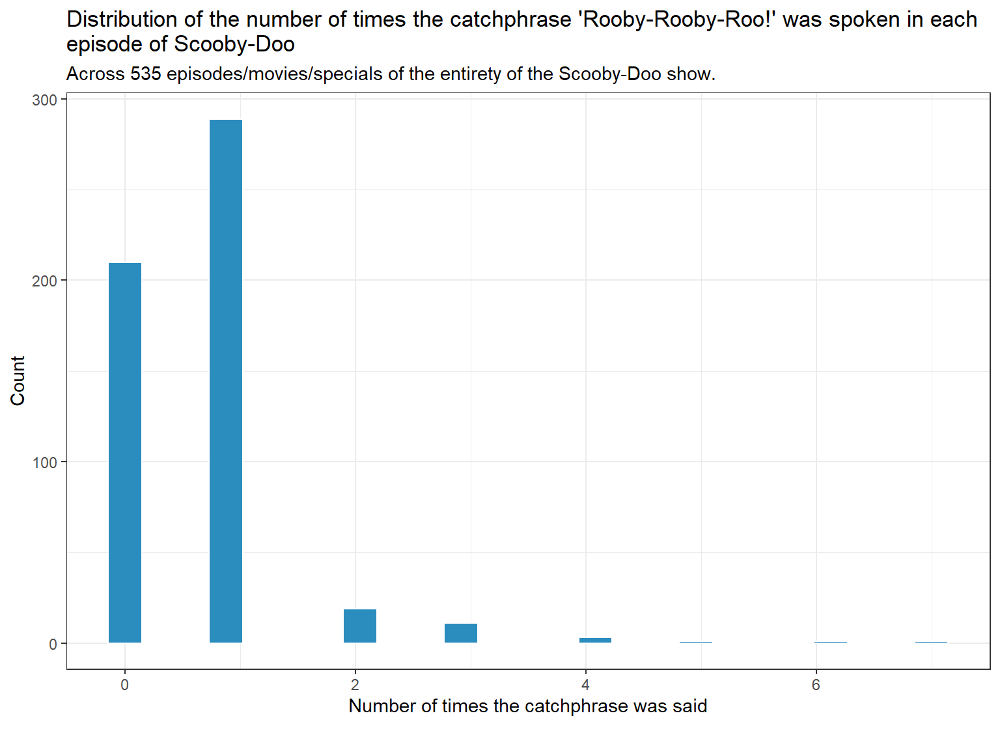
5.1.4 The Predictors
The predictors for the outcome are imdb, engagement, network and season. Each predictor variable was individually described.
The outcome was then visualized against each predictor.
5.2rooby_rooby_roo vs network
Code
tmp_data <- scooby_sampletmp_data$network <-fct_recode(tmp_data$network,ABC ="abc","Cartoon Network"="cartoon_network","Warner Brothers"="warner_brothers","Boomerang"="boomerang","Other Networks"="other_networks")ggplot(tmp_data, aes(x = network, y = rooby_rooby_roo)) +geom_violin(fill ="#2b8cbe", alpha =0.3, scale ="width")+geom_boxplot(fill ="#2b8cbe", width =0.1,outlier.color ="red") +labs(y ="Number of times 'Rooby-Rooby-Roo!' was said",x ="Network/Producer",title =str_wrap("Mapping the distribution of the outcome variable across the networks/producers who produced Scooby-Doo.",width =90),subtitle ="Across 535 episodes of Scooby-Doo.")
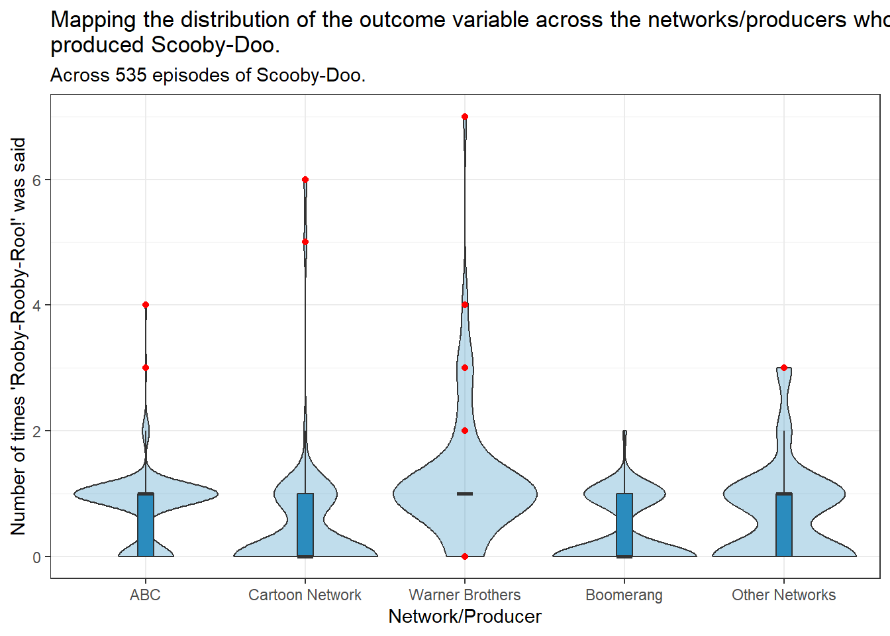
Warner Brothers appears to have a higher number of Rooby-Rooby-Roo’s compared to the other networks.
5.3rooby_rooby_roo vs season
Code
tmp_data <- scooby_sampletmp_data$season <-fct_recode(tmp_data$season,"Season 1"="season_1","Season 2"="season_2","Season 3 and 4"="season_3_4","Movie"="movie","Special / Crossover"="special_crossover")ggplot(tmp_data, aes(x = season, y = rooby_rooby_roo)) +geom_violin(fill ="#2b8cbe", alpha =0.3, scale ="width")+geom_boxplot(fill ="#2b8cbe", width =0.1,outlier.color ="red") +labs(y ="Number of times 'Rooby-Rooby-Roo!' was said",x ="Network/Producer",title =str_wrap("Mapping the distribution of the outcome variable across the various seasons/movies of Scooby-Doo.",width =90),subtitle ="Across 535 episodes of Scooby-Doo.")
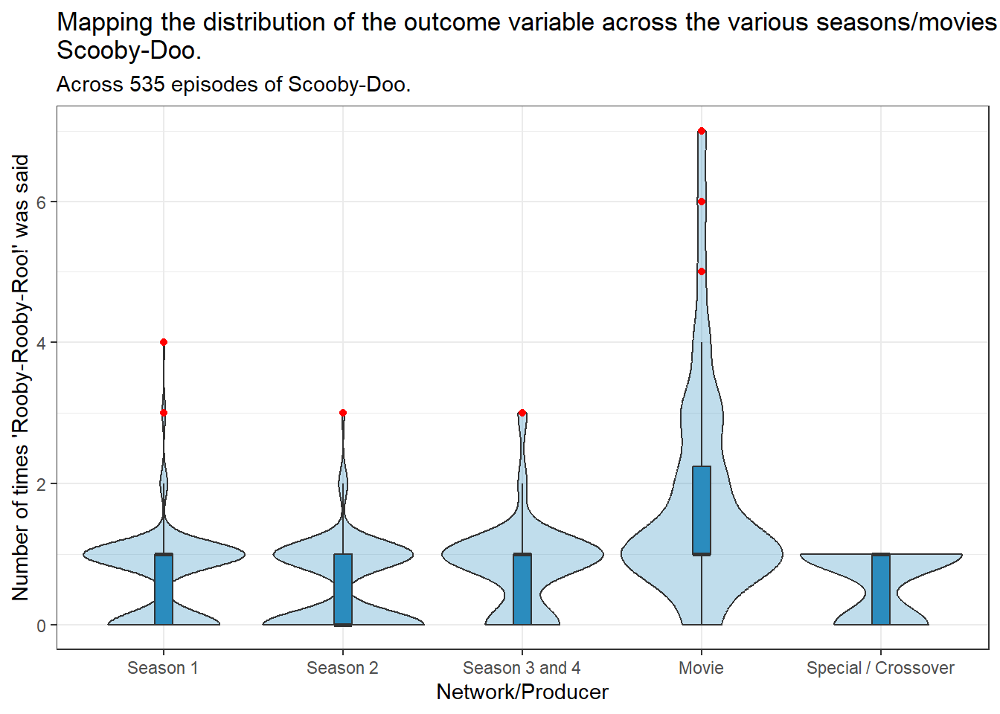
Movies appear to have a higher number of Rooby-Rooby-Roos compared to the other seasons/specials/crossovers.
5.4rooby_rooby_roo vs imdb
Code
ggplot(tmp_data, aes(y =as.factor(rooby_rooby_roo), x = imdb)) +geom_violin(fill ="#2b8cbe", alpha =0.4, scale ="width") +geom_boxplot(fill ="#2b8cbe", width =0.1,outlier.color ="red") +labs(y ="Number of times 'Rooby-Rooby-Roo!' was said",x ="IMDB Rating",title =str_wrap("Mapping the distribution of the outcome variable across the IMDB rating",width =90),subtitle ="Across 535 episodes of Scooby-Doo.")
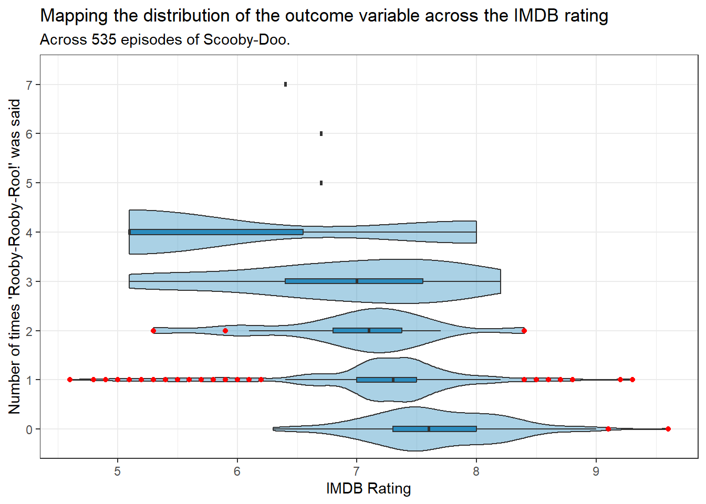
Scooby-Doo media with moreRooby-Rooby-Roo’s appear to have lower IMDB ratings.
5.5rooby_rooby_roo vs engagement
Code
ggplot(tmp_data, aes(x =as.factor(rooby_rooby_roo), y = engagement)) +geom_violin(fill ="#2b8cbe", alpha =0.4, scale ="width") +geom_boxplot(fill ="#2b8cbe", width =0.1,outlier.color ="red") +scale_x_discrete(breaks =c(0,1,2,3,4,5,6,7,8,9,10)) +labs(x ="Number of times 'Rooby-Rooby-Roo!' was said",y ="IMDB Engagement Score",title =str_wrap("Mapping the distribution of the outcome variable across the IMDB engagement metric.",width =80),subtitle ="Across 535 episodes of Scooby-Doo.")
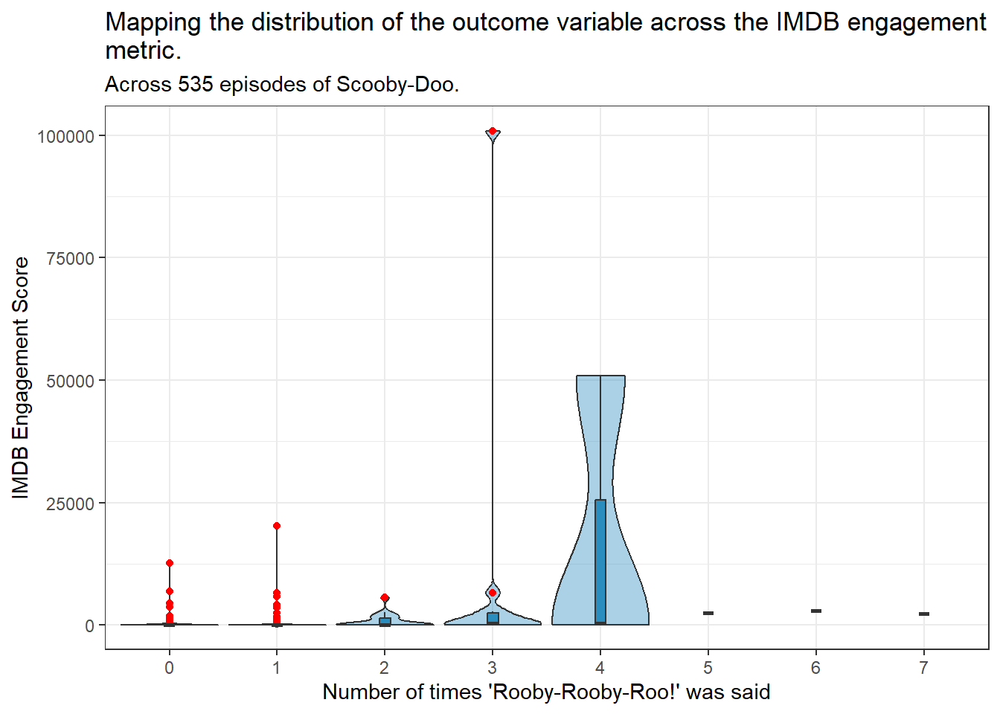
A significant outlier is seen for the engagement score. This outlier is the live action Scooby-Doo movie, titled “Scooby-Doo”, released in 2002.
This live action movie was considered a cult classic soon after it’s release due to the plot being more intense that the usual fare for Scooby-Doo movies, with a fair share of more adult jokes appearing as well. The movie was rated on IMDB by over 100,000 people, indicating that it stands several degrees above the other Scooby-Doo media in terms of engagement on IMDB.
5.6 Visualizing the distribution of the zero counts across the network predictor
The distribution of zero counts across the network predictor was visualized.
Code
tmp_data <- scooby_sampletmp_data$network <-fct_recode(tmp_data$network,ABC ="abc","Cartoon Network"="cartoon_network","Warner Brothers"="warner_brothers","Boomerang"="boomerang","Other Networks"="other_networks")tmp_data |>group_by(network) |> dplyr::summarize(n =n(), percent_0s =round(100*sum(rooby_rooby_roo ==0)/n,1)) |>ggplot(aes(y = network, x = percent_0s)) +geom_label(aes(label = percent_0s ), col ="#2b8cbe") +labs(x ="% of episodes/movies of Scooby-Doo with zero occurences of 'Rooby-Rooby-Roo!'.",y ="Network/Producer",title =str_wrap("Visualizing the percentage of episodes/movies with a zero count of `rooby_rooby_roo` across the different networks.", width =80))
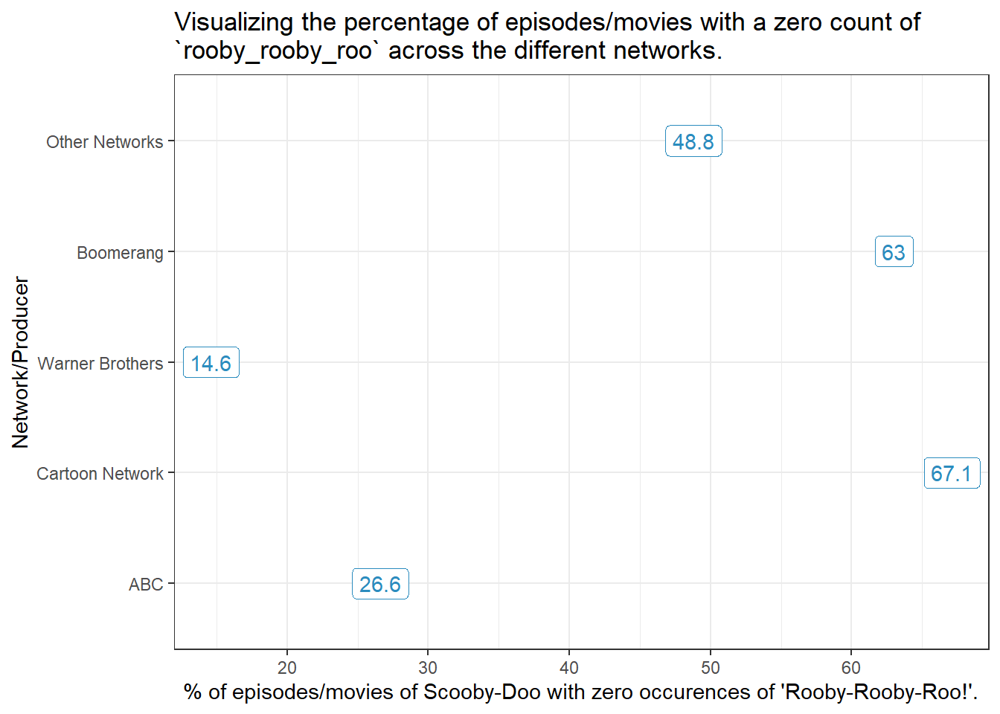
5.7 Visualizing the distribution of the zero counts across the season predictor
The distribution of zero counts across the season predictor was visualized.
Code
tmp_data <- scooby_sampletmp_data$season <-fct_recode(tmp_data$season,"Season 1"="season_1","Season 2"="season_2","Season 3 and 4"="season_3_4","Movie"="movie","Special / Crossover"="special_crossover")tmp_data |>group_by(season) |> dplyr::summarize(n =n(), percent_0s =round(100*sum(rooby_rooby_roo ==0)/n,1)) |>ggplot(aes(y = season, x = percent_0s)) +geom_label(aes(label = percent_0s), col ="#2b8cbe") +labs(x ="% of episodes/movies of Scooby-Doo with zero occurences of 'Rooby-Rooby-Roo!'.",y ="Season / Movie / Special",title =str_wrap("Visualizing the percentage of episodes/movies with a zero count of `rooby_rooby_roo` across different seasons/Movies/Specials of Scooby-Doo.", width =60))
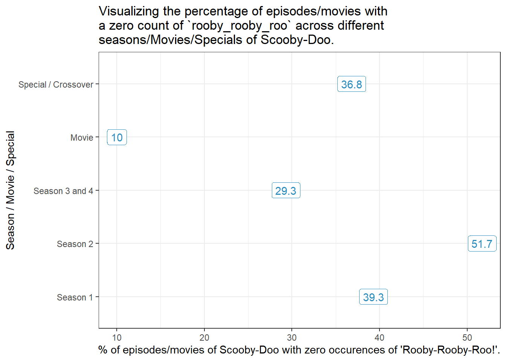
5.8 Preliminary Thoughts
I believe that higher IMDB scores will be associated with higher counts of Rooby-Rooby-Roo, and lower IMDB scores will be associated with lower counts of Rooby-Rooby-Roo.
I believe that movies will have higher counts of Rooby-Rooby-Roo’s.
I believe that media produced by Cartoon Network and Boomerang will have lower counts of Rooby-Rooby-Roo’s.
5.8.1 Missingness
A seperate dataset, containing the identifier variable, along with the outcome and the predictor variables was created and stored in the tibble scooby_q1. This tibble was then assessed for missingness using miss_var_summary.
The variables imdb and engagement have 15 missing values each.
The data can be assumed to be MAR (Missing At Random), since the missing data are not randomly distributed. It cannot be assumed to be MNAR (Missing Not At Random) since there does not appear to be a relationship between the magnitude of a value and it’s missingness (or inclusion in the non-missing data), since there is no preponderance of values with lower or higher magnitude being missing.
Single imputation was then performed on the dataset, to account for missingness. The complete dataset, containing the data for both the analyses had it’s missing values imputed.
5.8.2 Imputing Missing Variables
Using the mice function, missing values in the scooby_q1 tibble were singly imputed and stored in the q1_simp tibble.
Code
set.seed(4322023)q1_mice1 <-mice(scooby_q1, m =10, print =FALSE)
An interaction term between the main effects of network and imdb, which would add 4 degrees of freedom to the model.
A restricted cubic spline applied to imdb.
An interaction term between imdb and season, which would add 4 degrees of freedom to the model.
The Poisson model created for the purpose of testing collinearity was then re-fit using Glm() from the rms package to obtain the number of degrees of freedom in the model without adding a non-linear term.
Code
d <-datadist(q1_simp)options(datadist ="d")mod_poisson_rms <-Glm(rooby_rooby_roo ~ imdb + engagement + network +season,family =poisson(), data = q1_simp, x = T, y = T)mod_poisson_rms
General Linear Model
Glm(formula = rooby_rooby_roo ~ imdb + engagement + network +
season, family = poisson(), data = q1_simp, x = T, y = T)
Model Likelihood
Ratio Test
Obs 535 LR chi2 90.48
Residual d.f.524 d.f. 10
g 0.496 Pr(> chi2) <0.0001
Coef S.E. Wald Z Pr(>|Z|)
Intercept 1.8019 0.6048 2.98 0.0029
imdb -0.2779 0.0819 -3.39 0.0007
engagement 0.0000 0.0000 0.32 0.7470
network=cartoon_network -0.4735 0.1931 -2.45 0.0142
network=warner_brothers -0.0361 0.1845 -0.20 0.8447
network=boomerang -0.5819 0.2147 -2.71 0.0067
network=other_networks -0.2212 0.1684 -1.31 0.1890
season=season_2 -0.1466 0.1435 -1.02 0.3068
season=season_3_4 0.0265 0.1691 0.16 0.8754
season=movie 0.6389 0.2305 2.77 0.0056
season=special_crossover -0.1181 0.3072 -0.38 0.7008
A restricted cubic spline with 3 knots applied to imdb would add a single degree of freedom to the model, spending a total of 11 degrees of freedom.
5.8.6 Fitting a Poisson Model
A Poisson model, mod_poisson, was fit using glm().
Code
mod_poisson <-glm(rooby_rooby_roo ~rcs(imdb,3) + engagement + network + season ,data = q1_train, family ="poisson")
5.8.7 Model Coefficients
The model’s coefficients were obtained using the tidy function.
A rootogram was created using the rootogram function from the countreg package.
Code
p_root <- topmodels::rootogram(mod_poisson, max =10,main ="Rootogram for the Poisson model")
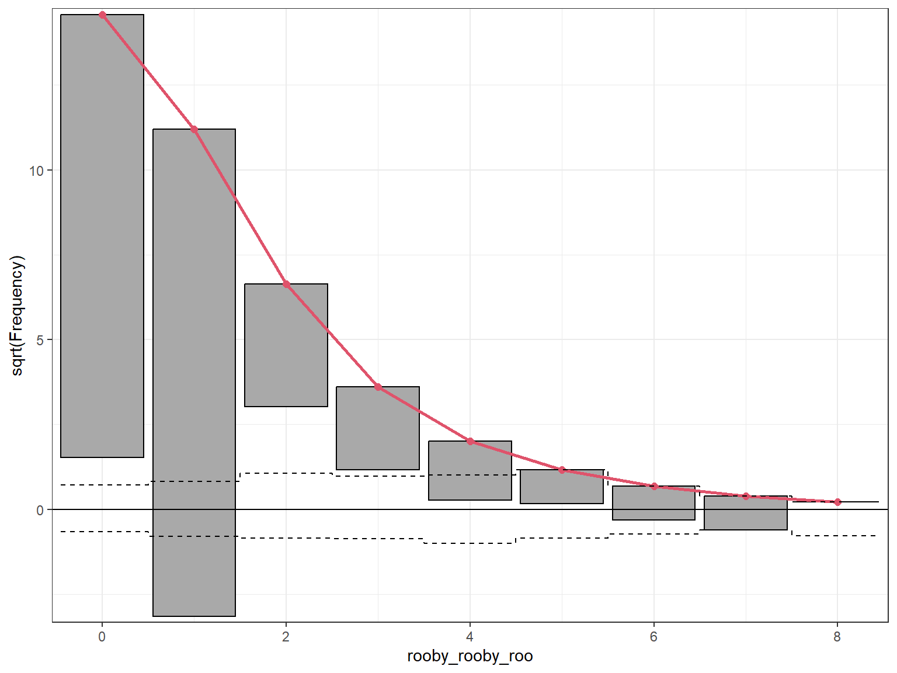
The Poisson model (mod_poisson) under-predicts 0 counts, over-predicts 1 counts, and under-predicts 3, 4 and 5 counts, and over-predicts 6 and 7 counts.
5.8.9 Storing Training Sample Predictions
Using the augment function, the training sample predictions for the mod_poisson model were stored.
Warning: The `augment()` method for objects of class `negbin` is not maintained by the broom team, and is only supported through the `glm` tidier method. Please be cautious in interpreting and reporting broom output.
This warning is displayed once per session.
Warning in value[[3L]](cond): system is computationally singular: reciprocal
condition number = 6.56872e-62FALSE
Code
summary(mod_zip)
Call:
pscl::zeroinfl(formula = rooby_rooby_roo ~ rcs(imdb, 3) + engagement +
network + season, data = q1_train)
Pearson residuals:
Min 1Q Median 3Q Max
-1.4387 -0.6795 0.1373 0.4081 4.1033
Count model coefficients (poisson with log link):
Estimate Std. Error z value Pr(>|z|)
(Intercept) 1.719e+00 NA NA NA
rcs(imdb, 3)imdb -2.741e-01 NA NA NA
rcs(imdb, 3)imdb' 6.660e-02 NA NA NA
engagement 2.802e-06 NA NA NA
networkcartoon_network -4.538e-01 NA NA NA
networkwarner_brothers -5.290e-02 NA NA NA
networkboomerang -5.150e-01 NA NA NA
networkother_networks -1.883e-01 NA NA NA
seasonseason_2 -2.081e-01 NA NA NA
seasonseason_3_4 -4.779e-02 NA NA NA
seasonmovie 8.372e-01 NA NA NA
seasonspecial_crossover -2.166e-01 NA NA NA
Zero-inflation model coefficients (binomial with logit link):
Estimate Std. Error z value Pr(>|z|)
(Intercept) -1.511e+01 NA NA NA
rcs(imdb, 3)imdb -3.225e+00 NA NA NA
rcs(imdb, 3)imdb' -1.858e+00 NA NA NA
engagement 3.922e-04 NA NA NA
networkcartoon_network 1.566e+00 NA NA NA
networkwarner_brothers -1.227e+00 NA NA NA
networkboomerang 1.011e+00 NA NA NA
networkother_networks 1.266e+00 NA NA NA
seasonseason_2 4.908e-01 NA NA NA
seasonseason_3_4 4.850e-01 NA NA NA
seasonmovie 3.671e-02 NA NA NA
seasonspecial_crossover 7.360e-01 NA NA NA
Number of iterations in BFGS optimization: 25
Log-likelihood: -392 on 24 Df
5.8.17 Zero-Inflated Poisson Model Rootogram
Code
zip_root <- topmodels::rootogram(mod_zip, max =10,main ="Rootogram for the Zero-Inflated Poisson Model")
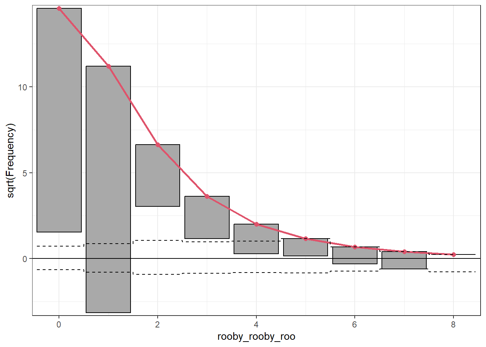
5.8.18 Storing Training Sample Predictions
Code
mod_zip_aug <- q1_train |>mutate(".fitted"=predict(mod_zip, type ="response"),".resid"=resid(mod_zip, type ="response"))mod_zip_aug |>select(index, rooby_rooby_roo, .fitted, .resid) |>head(3)
Warning in value[[3L]](cond): system is computationally singular: reciprocal
condition number = 2.1577e-46FALSE
Code
summary(mod_zinb)
Call:
pscl::zeroinfl(formula = rooby_rooby_roo ~ rcs(imdb, 3) + engagement +
network + season, data = q1_train, dist = "negbin")
Pearson residuals:
Min 1Q Median 3Q Max
-1.3855 -0.6603 0.1403 0.3362 4.1881
Count model coefficients (negbin with log link):
Estimate Std. Error z value Pr(>|z|)
(Intercept) 1.257e+00 NA NA NA
rcs(imdb, 3)imdb -2.070e-01 NA NA NA
rcs(imdb, 3)imdb' -4.830e-02 NA NA NA
engagement 5.965e-06 NA NA NA
networkcartoon_network 3.438e-01 NA NA NA
networkwarner_brothers 9.493e-02 NA NA NA
networkboomerang -3.765e-01 NA NA NA
networkother_networks -1.481e-01 NA NA NA
seasonseason_2 -1.322e-01 NA NA NA
seasonseason_3_4 -8.629e-02 NA NA NA
seasonmovie 6.345e-01 NA NA NA
seasonspecial_crossover -4.164e-01 NA NA NA
Log(theta) 1.663e+01 NA NA NA
Zero-inflation model coefficients (binomial with logit link):
Estimate Std. Error z value Pr(>|z|)
(Intercept) -72.139488 NA NA NA
rcs(imdb, 3)imdb 5.234140 NA NA NA
rcs(imdb, 3)imdb' -4.966800 NA NA NA
engagement -0.006803 NA NA NA
networkcartoon_network 36.255230 NA NA NA
networkwarner_brothers -7.081453 NA NA NA
networkboomerang 32.389288 NA NA NA
networkother_networks -31.492774 NA NA NA
seasonseason_2 1.735211 NA NA NA
seasonseason_3_4 -4.228295 NA NA NA
seasonmovie 2.998970 NA NA NA
seasonspecial_crossover -96.148898 NA NA NA
Theta = 16665909.2848
Number of iterations in BFGS optimization: 103
Log-likelihood: -384.7 on 25 Df
5.8.21 Rootogram
Code
zinb_root <- topmodels::rootogram(mod_zinb, max =10,main ="Rootogram for Zero-Inflated Negative Binomial Model")
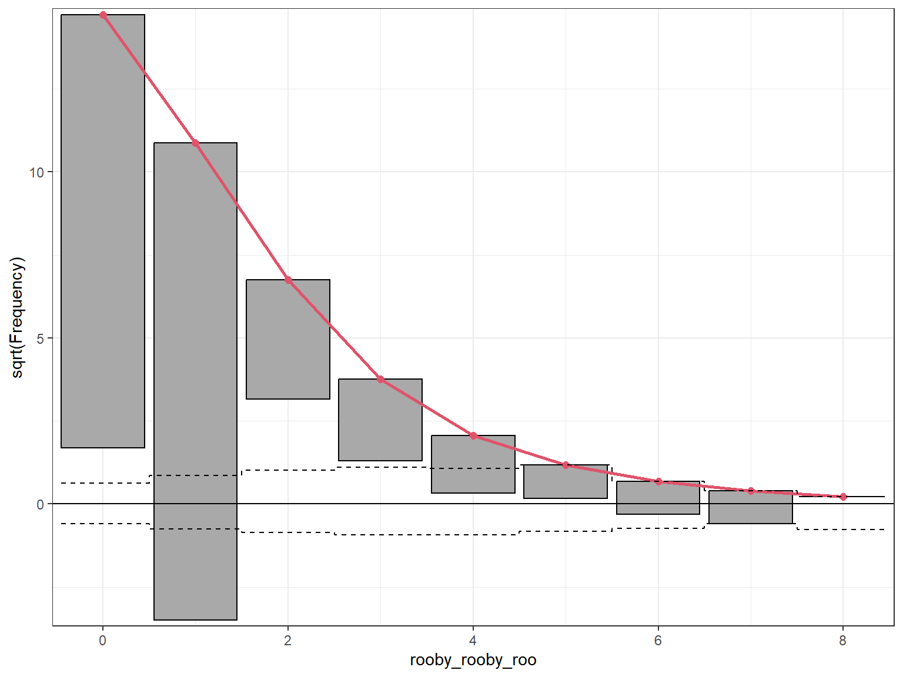
5.8.22 Storing Training Sample Predictions
Code
mod_zinb_aug <- q1_train |>mutate(".fitted"=predict(mod_zinb, type ="response"),".resid"=resid(mod_zinb, type ="response"))mod_zinb_aug |>select(index, rooby_rooby_roo, .fitted, .resid) |>head(3)
The \(R^2\) is 0.22, indicating that the model does not do a very good job of explaining the variation seen in the data.
5.8.33 Diagnostic Plots
A plot of the residuals versus the fitted values of rooby-rooby-roo for the final model were obtained.
Code
ggplot(sm_poiss1, aes(x = .fitted, y = .resid)) +geom_point() +labs(title ="Residuals vs. Fitted `rooby_rooby_roo`",subtitle ="Original Poisson Regression model")
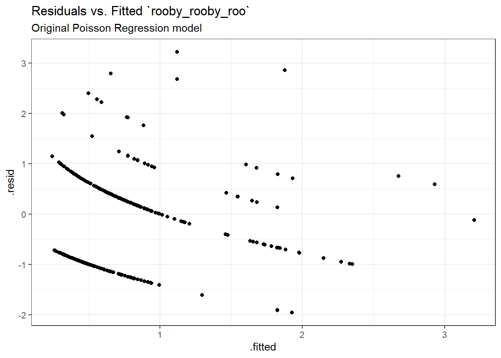
The pattern seen here corroborates the pattern seen in the rootogram, with an underfitting of 0 values and an overfitting of 1 values.
glm.diag.plots was used to obtain the other diagnostic plots.
Code
glm.diag.plots(mod_poisson_imp)
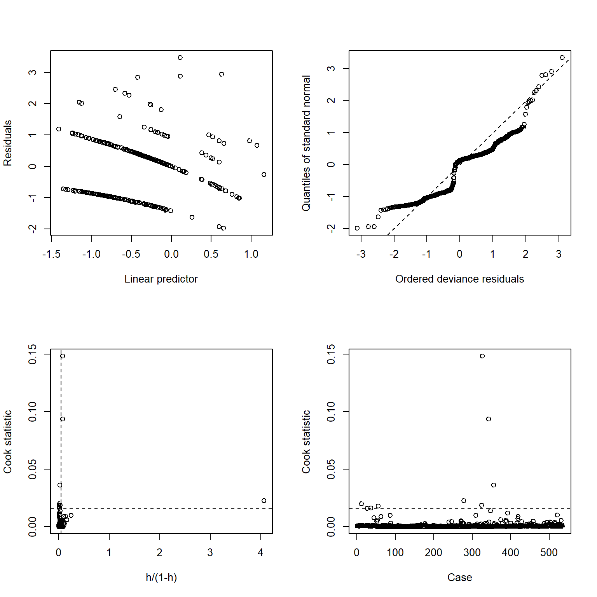
The plots show that the model residuals follow a somewhat normal distribution, with some significant outliers. There are no points that exert an undue influence on the model.
Code
par(mfrow =c(2,2))plot(mod_poisson_imp, which =1)plot(mod_poisson_imp, which =2)plot(mod_poisson_imp, which =3)plot(mod_poisson_imp, which =4)
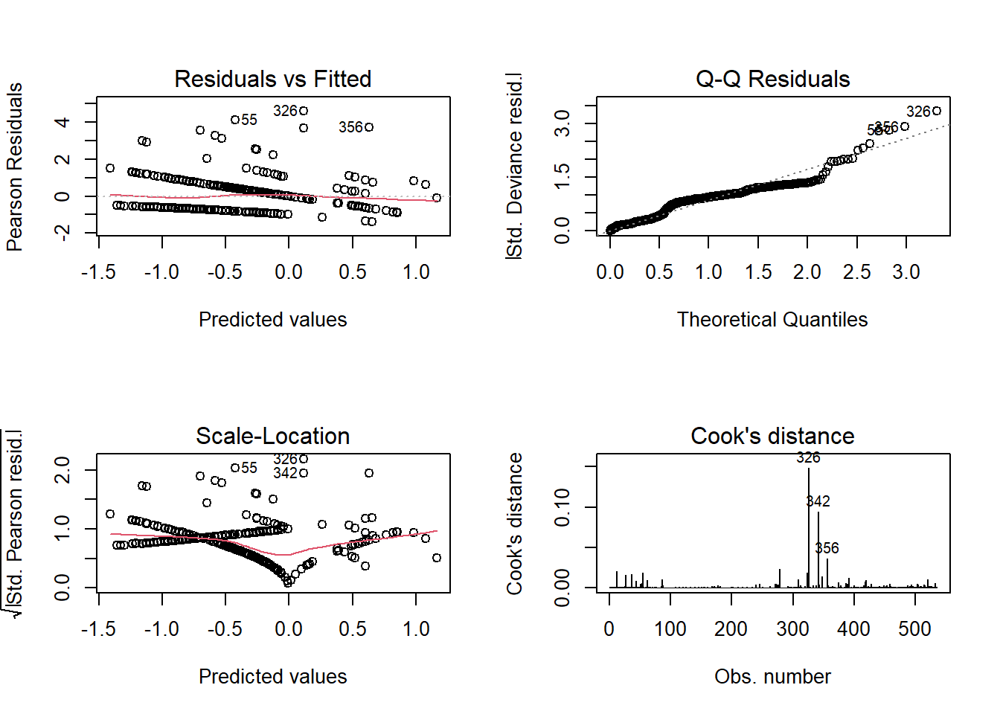
326 shows up as a outlier in all of these plots, along with 342.
The second outlier is the live action Scooby-Doo movie, titled “Scooby-Doo” which was very popular at the time it released, and was considered a cult classic. Over 10,000 people voted to rate the movie on IMDB, which is higher than the engagement value for the other Scooby-Doo media.
5.10 Testing for Overdispersion
The Poisson distribution assumes that the variance of the distribution should be equal to it’s mean. Overdispersion occurs when the observed variance of the data is more than what would be expected under a Poisson distributio, and can indicate variability in the data that is not being explained by the model.
Code
cat("overdispersion ratio is ", sum(z^2)/ (n - k), "\n")
overdispersion ratio is 0.6754214
Code
cat("p value of overdispersion test is ", pchisq(sum(z^2), df = n-k, lower.tail =FALSE), "\n")
p value of overdispersion test is 1
It does not look like the data has the issue of overdispersion from the large p value, and the data can be assumed to have a Poisson distribution.
Monster Motivation: Is it possible to predict the motive of the major antagonist of an episode of Scooby-Doo, based on the nature of the monster the antagonist appears as?
6.1 The Outcome
The outcome variable is motive, describing the motive of the antagonist of each episode/movie of Scooby-Doo.
The predictors are monster_amount, monster_gender, monster_real.
monster_amount is a continuous quantitative variable describing the number of monsters that appear in each episode/movie.
Code
describe(scooby_sample$monster_amount)
scooby_sample$monster_amount
n missing distinct Info Mean Gmd .05 .10
535 0 16 0.739 1.944 1.781 0 1
.25 .50 .75 .90 .95
1 1 2 4 7
Value 0 1 2 3 4 5 6 7 8 9 10
Frequency 30 341 65 32 23 7 5 7 6 4 3
Proportion 0.056 0.637 0.121 0.060 0.043 0.013 0.009 0.013 0.011 0.007 0.006
Value 11 12 13 15 19
Frequency 4 3 3 1 1
Proportion 0.007 0.006 0.006 0.002 0.002
For the frequency table, variable is rounded to the nearest 0
monster_gender describes if the monster/monsters present in the episode were either male or female(in terms of the pronouns the Mystery Inc. gang used to refer to them). This variable had a large number of levels, and was collapsed to male if all of the monsters were male, and female if any of the monsters present in the episode/movie were female.
A seperate dataset, containing the identifier variable, along with the outcome and the predictor variables was created and stored in the tibble scooby_q2. This tibble was then assessed for missingness using miss_var_summary.
The variables monster_gender and monster_real have 15 missing values each.
The data can be assumed to be MAR (Missing At Random), since the missing data are not randomly distributed. It cannot be assumed to be MNAR (Missing Not At Random) since there does not appear to be a relationship between the magnitude of a value and it’s missingness (or inclusion in the non-missing data), since there is no preponderance of values with lower or higher magnitude being missing.
Single imputation was then performed on the dataset, to account for missingness. The complete dataset, containing the data for both the analyses had it’s missing values imputed.
6.4 Imputing Missing Variables
Code
set.seed(4322023)q2_mice1 <-mice(scooby_q2, m =10, print =FALSE)
Registered S3 method overwritten by 'mosaic':
method from
fortify.SpatialPolygonsDataFrame ggplot2
motive
min
Q1
median
Q3
max
mean
sd
n
missing
competition
0
1
1.0
1.00
19
1.58
2.09
168
0
theft
0
1
1.0
1.00
15
1.56
1.82
124
0
indirect_self_interest
0
1
1.0
2.00
9
1.60
1.34
118
0
treasure
1
1
1.0
2.00
7
1.70
1.28
54
0
conquer
1
3
5.5
9.75
13
6.17
3.96
42
0
misc_motive
0
0
1.0
2.00
5
1.38
1.42
29
0
6.5.1motive vs monster_amount
Code
tmp_data_2 <- q2_simptmp_data_2$motive <-fct_recode(tmp_data_2$motive,"Competition"="competition","Theft"="theft","Indirect Self Interest"="indirect_self_interest","Treasure"="treasure","Conquer"="conquer","Miscellaneous Motives"="misc_motive")ggplot(tmp_data_2, aes(x = motive, y = monster_amount, fill = motive)) +geom_violin(fill ="#2b8cbe", alpha =0.3, scale ="width")+geom_boxplot(fill ="#2b8cbe", width =0.1,outlier.color ="red")+labs(y ="Number of monsters per episode/movie",x ="Motive of the antagonist",title =str_wrap("Mapping the motives of the major antagonist of every episode/movie against the number of monsters across the various seasons/movies of Scooby-Doo.",width =80),subtitle ="Across 535 episodes of Scooby-Doo.")
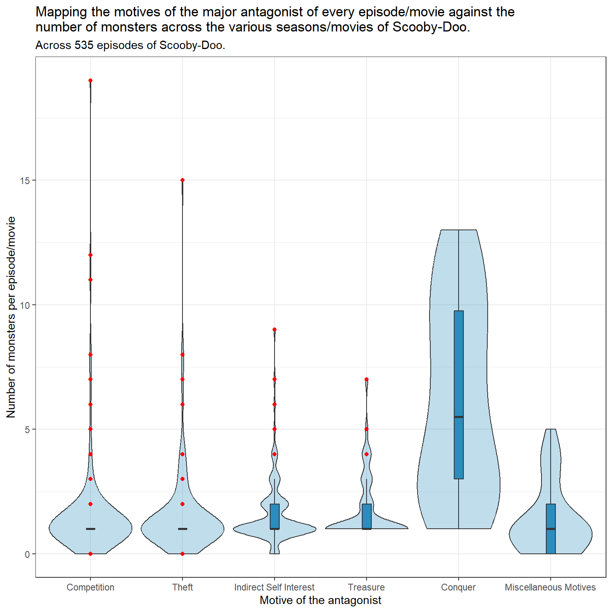
Antagonists with a motivation to conquer appear to star in episodes with more monsters, compared to antagonists with other motivations.
6.5.2motive vs monster_real
Code
tmp_data_2 <- tmp_data_2 |>mutate(monster_real =fct_recode(monster_real,"Monster was not real"="not_real","Monster was real"="real"))ggplot(tmp_data_2, aes(motive))+geom_bar(fill ="#2b8cbe") +facet_wrap(~ monster_real)+theme(axis.text.x =element_text(angle =45, hjust=1)) +labs(y ="Count",x ="Motive of the antagonist",title =str_wrap("Mapping the motives of the major antagonist of every episode/movie against the nature of reality of the monsters across the various seasons/movies of Scooby-Doo.",width =80),subtitle ="Across 535 episodes of Scooby-Doo.")
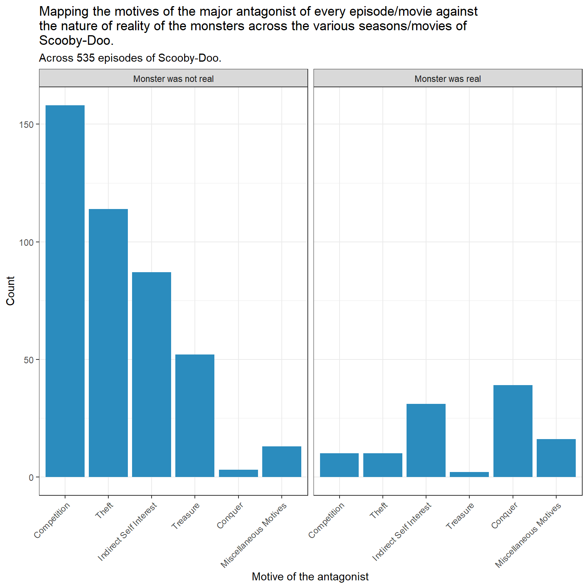
It appears that for episodes with monsters that are not real, competition is the most numerous motivation. In episodes with monsters that are real, conquering appears to be the most numerous motivation.
6.5.3motive vs monster_gender
Code
tmp_data_2 <- tmp_data_2 |>mutate(monster_gender =fct_recode(monster_gender,"Male"="male","Female"="female"))ggplot(tmp_data_2, aes(motive))+geom_bar(fill ="#2b8cbe") +facet_wrap(~ monster_gender)+theme(axis.text.x =element_text(angle =45, hjust=1)) +labs(y ="Count",x ="Motive of the antagonist",title =str_wrap("Mapping the motives of the major antagonist of every episode/movie against the gender of the monsters across the various seasons/movies of Scooby-Doo.",width =80),subtitle ="Across 535 episodes of Scooby-Doo.")
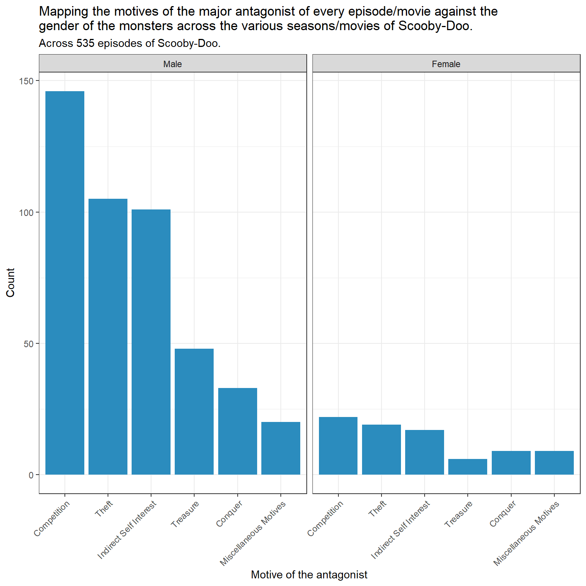
Episodes with only male monsters have competition as the most numerous outcome, and episodes that have female monsters also have competition as the most numerous outcome.
6.6 Assessing collinearity
The ggpairs function was used to plot a scatterplot matrix to assess for potential collinearity.
The Spearman plot shows that if adding non-linear terms were to improve the fit of the model, the term most likely to add the most predictive power with a non-linear term applied to it would be monster_real.
However, no non-linear term was selected, given that adding non-linear terms would result in spending of too many degrees of freedom.
6.8 Fitting the Multinomial Model
A multinomial model was fit using the multinom function and was designated as multinom_model.
# weights: 30 (20 variable)
initial value 958.591316
iter 10 value 806.559330
iter 20 value 761.294580
iter 30 value 760.258265
final value 760.257932
converged
Call:
polr(formula = motive ~ monster_real + monster_amount + monster_gender,
data = q2_simp, Hess = TRUE)
Coefficients:
Value Std. Error t value
monster_realreal 1.95262 0.23359 8.3593
monster_amount 0.06793 0.03869 1.7558
monster_genderfemale 0.07528 0.21936 0.3432
Intercepts:
Value Std. Error t value
competition|theft -0.4092 0.1140 -3.5890
theft|indirect_self_interest 0.6615 0.1148 5.7641
indirect_self_interest|treasure 1.8288 0.1406 13.0087
treasure|conquer 2.6939 0.1795 15.0048
conquer|misc_motive 3.8677 0.2454 15.7593
Residual Deviance: 1631.342
AIC: 1647.342
6.11 Testing the Proportional Odds Assumption
A likelihood ratio test was performed. The multinomial model fits 5 intercepts and 20 slopes, for a total of 25 parameters. The proportional odds model fits 5 intercepts and 4 slopes, for a total of 9 parameters. The difference between them is 16.
G is a chi-square statistic, calculated as the difference in deviance. Deviance = -2 log likelihood.
The p value associated with the chi-square statistic, with a difference of 16 degrees of freedom, is calculated.
Code
pchisq(G, 16, lower.tail =FALSE)
[1] 3.12363e-16
The p value suggests that the proportional odds model does not fit the data as well as the multinomial model does.
6.12 Comparing Metrics
Model
Effective Degrees of Freedom
Deviance
AIC
Multinomial Model
20
1515.427
1555.427
Polynomial Model
8
1624.988
1640.988
Based on the results of testing the proportional odds assumption, and the model metrics, the multinomial model appears to be a better fit for the data than the proportional odds model.
The predicted probabilities were stored, tabulated, and then pivoted. This resulting table was used to create graphs of predicted probabilities of the outcome across the different predictors.
6.19 Predicted Probabilities and monster_amount
The predicted probabilities for each motive were graphed against the monster_amount variable.
Code
ggplot(q2_simp_fits_long, aes(x = monster_amount, y = prob, shape = response, col = response)) +geom_point(size =3) +scale_fill_brewer(palette ="Set1") +labs(title =str_wrap("Comparing predicted probabilities of the different antagonist motive types against the number of monsters of each installment of Scooby-Doo Media.", width =80),subtitle ="Using a multinomial logistic regression model.",x ="Number of monsters per installment",y ="Predicted Probability")
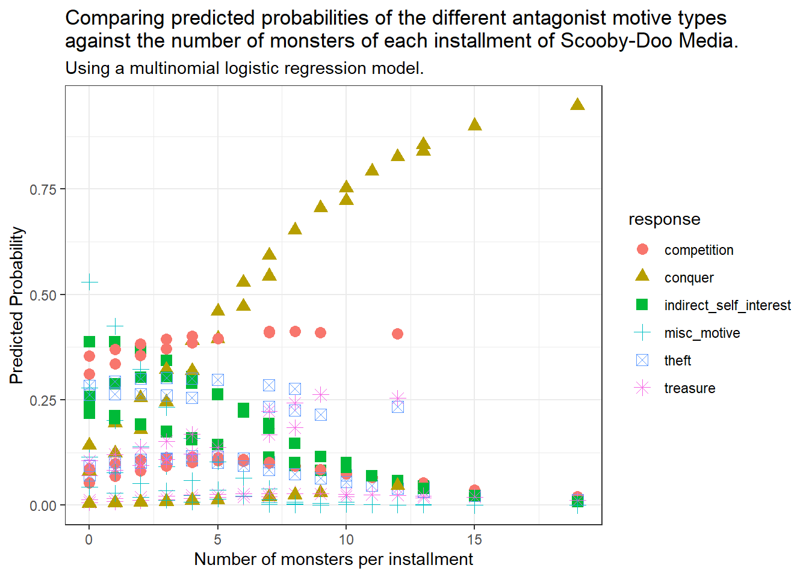
Higher monster counts are association with higher predicted probability of conquer being the model’s prediction for the antagonist’s motivation, and lower monster counts are associated with higher predicted probability of misc_motive being the model’s prediction for the antagonist’s motivation.
6.20 Predicted Probabilities and monster_real
Code
ggplot(q2_simp_fits_long, aes(x = monster_real, y = prob,col = response,shape = response)) +geom_point(size =3) +geom_jitter(width =0.25) +scale_fill_brewer(palette ="Set1")+labs(title =str_wrap("Comparing predicted probabilities of the different antagonist motive types against whether the monster(s) of each installment of Scooby-Doo Media was real or not.", width =80),subtitle ="Using a multinomial logistic regression model.",x ="Whether the monster was real or not",y ="Predicted Probability")
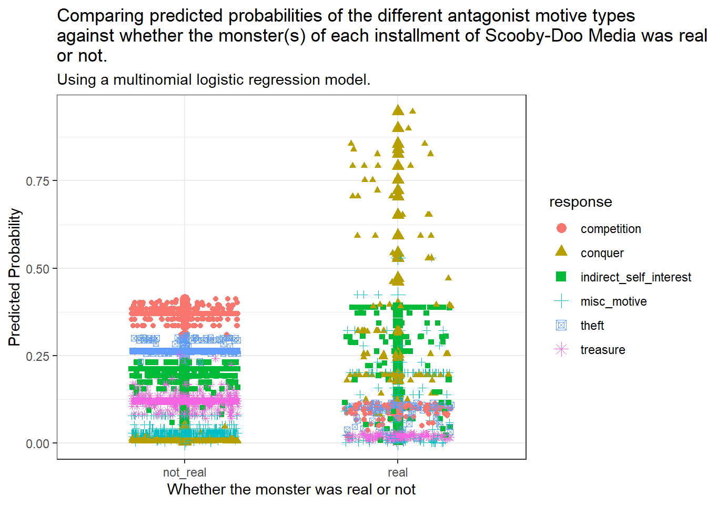
Monsters who are real have a higher predicted probability of having conquering as a motivation, along with having a miscellaneous motivation. Monsters who are not real have a higher predicted probability of having a competition be their motivation, with a very low probability of conquering being their motivation.
6.21 Predicted Probabilities and monster_gender
Code
ggplot(q2_simp_fits_long, aes(x = monster_gender, y = prob,col = response,shape = response)) +geom_point(size =3) +geom_jitter(width =0.25) +scale_fill_brewer(palette ="Set1") +labs(title =str_wrap("Comparing predicted probabilities of the different antagonist motive types against whether the monster(s) of each installment of Scooby-Doo Media included a female monster.", width =80),subtitle =str_wrap("Using a multinomial logistic regression model.", width =80),x ="Whether the monster(s) included a female monster.",y ="Predicted Probability")
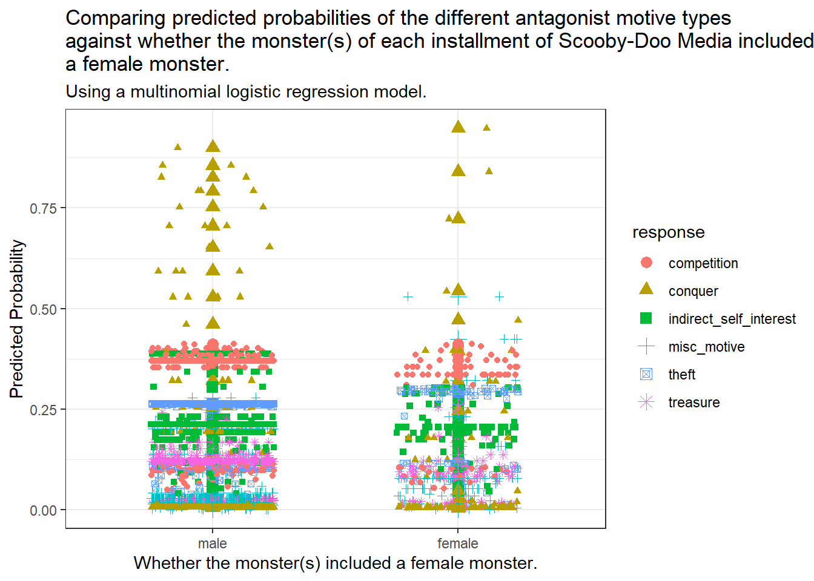
Monster gender does not appear to cause a significant effect on the predicted probability of the motivation types.
7.1.1 The relationship between the Rooby-Rooby-Roo count and the producing network
Cartoon Network - Scooby-Doo media being produced by Cartoon Network results in a 37.6%(95%CI: 6.5% to 59.3%) decrease in count of Rooby-Rooby-Roo’s per episode compared to being produced by ABC , holding everything else constant.
Scooby-Doo media produced by Cartoon Network is more likely to have a lower count of Rooby-Rooby-Roos per episode when compared to Scooby-Doo media produced by ABC, provided they have the same IMDB rating, the same IMDB engagement score, and are from the same season.
Boomerang Episodes - Scooby-Doo media being produced by Boomerang results in a 44.1% (95%CI: 15.8% to 64.1%) decrease in count of Rooby-Rooby-Roo’s per episode compared to being produced by ABC, holding everything else constant.
Scooby-Doo media produced by Boomerang is more likely to have a lower count of Rooby-Rooby-Roos per episode when compared to Scooby-Doo media produced by ABC, provided they have the same IMDB rating, the same IMDB engagement score, and are from the same season.
7.1.2 The relationship between the Rooby-Rooby-Roo count and the type of Scooby-Doo media
Movies: The form of Scooby-Doo media being a movie results in a 89.6%(95%CI: 20.5% to 199.3%) increase in count of Rooby-Rooby-Roo’s compared to season 1 episodes, holding everything else constant.
Movies are more likely to have a higher count of Rooby-Rooby-Roo’s when compared to Season 1 episodes, provided they are both produced by the same network/producer, have the same IMDB score, and have the same IMDB engagement rating.
7.2.1 The relationship between monster motivation and the monster count
For two installments of Scooby-Doo media,“EP-1” and “EP-2”, with the same nature of the monster, and the same gender of the monster, if “EP-1” has one more monster than “EP-2”, EP-1’s predicted odds of the antagonist’s motive being “Conquer” rather than “Competition” is 1.21 times(95% confidence interval - 1.03 to 1.42) EP-2’s odds of the antagonist’s motive being “Conquer” rather than “Competition”.
Episodes with more monsters have a meaningfully higher odds of the antagonist having a motive of “Conquer” rather than “Competition”, provided the monster gender and the reality of the monster remain same.
For two installments of Scooby-Doo media,“EP-1” and “EP-2”, with the same nature of the monster, and the same gender of the monster, if “EP-1” has one more monster than “EP-2”, EP-1’s predicted odds of the antagonist’s motive being “Miscellaneous” rather than “Competition” is only 0.66 times(95% confidence interval - 0.46 to 0.94) EP-2’s odds of the antagonist’s motive being “Miscellaneous” rather than “Competition”.
Episodes with more monsters have a meaningfully lower odds of the antagonist having a motive of “Miscellaneous” rather than “Competition”, provided the monster gender and the reality of the monster remain the same.
7.2.2 The relationship between monster motivation and the nature of the monster’s reality
For two installments of Scooby-Doo media,“EP-1” and “EP-2”, with the same number of monsters, and the same gender of the monster, and the monsters in EP-2 are not real and EP-1 has a real monster, EP-1’s predicted odds of the antagonist’s motive being “Indirect Self Interest” rather than “Competition” is 6.95 times (95% confidence interval - 3.11 to 15.54) EP-2’s odds of the antagonist’s motive being “Indirect Self Interest” rather than “Competition”.
Episodes with real monsters have a meaningfully higher odds of the antagonist having a motive of “Indirect Self Interest” rather than “Competition”, provided the monster gender and the number of monsters remain the same.
For two installments of Scooby-Doo media,“EP-1” and “EP-2”, with the same number of monsters, and the the same gender of the monster, and the monsters in EP-2 are not real and EP-1 has a real monster, EP-1’s predicted odds of the antagonist’s motive being “Conquer” rather than “Competition” is 115.167 times(95% confidence interval - 28.60 to 463.70) EP-2’s odds of the antagonist’s motive being “Conquer” rather than “Competition”.
Episodes with real monsters have a meaningfully higher odds of the antagonist having a motive of “Conquer” rather than “Competition”, provided the monster gender and the number of monsters remain the same.
For two installments of Scooby-Doo media,“EP-1” and “EP-2”, with the same number of monsters, and the the same gender of the monster, and the monsters in EP-2 are not real and EP-1 has a real monster, EP-1’s predicted odds of the antagonist’s motive being “Miscellaneous” rather than “Competition” is 33.966 times(95% confidence interval - 12.10 to 95.74) EP-2’s odds of the antagonist’s motive being “Miscellaneous” rather than “Competition”.
Episodes with real monsters have a meaningfully higher odds of the antagonist having a motive of “Miscellaneous” rather than “Competition”, provided the monster gender and the number of monsters remain the same.
7.2.3 The relationship between monster motivation and the gender of the monsters
Having a female monster in an installment of Scooby-Doo does not have a significant impact on the motive of the antagonist of that installment when compared to an installment with no female monsters, provided the number of monsters and the nature of the monster remains same across both installments.
7.3 Answering My Research Questions
7.4 To Answer My First Question….
Predicting an iconic catchphrase: Are the logistics of an episode of Scooby-Doo good predictors of the number of times an iconic catchphrase is spoken?
The network/producer that produces a particular installment of Scooby-Doo has a meaningful impact on the number of times Rooby-Rooby-Roo is spoken. Cartoon Network and Boomerang produce media that is less likely to have a higher count of Rooby-Rooby-Roo’s compared to ABC, which is the network that has produced the most Scooby-Doo media.(Provided the IMDB logistics and the type of installment remain constant.)
Given that there is a meaningful correlation, the producing network of Scooby-Doo media can be considered a decent predictor of the number of times Rooby-Rooby-Roo’s are spoken per installment.
The nature of the type of installment of Scooby-Doo media has a meaningful impact on the number of times Rooby-Rooby-Roo is spoken.
Movies are more likely to have a higher count of Rooby-Rooby-Roo’s compared to Season 1 episodes, provided the two installments have the same IMDB logistics and the same producing network.
Given that there is a meaningful correlation, the nature of the type of installment of Scooby-Doo media can be considered a decent predictor of the number of times Rooby-Rooby-Roo’s are spoken per installment.
7.5 To Answer My Second Question….
Monster Motivation: Is it possible to predict the motive of the major antagonist of an episode of Scooby-Doo, based on the nature of the monster the antagonist appears as?
The number of monsters per installment of Scooby-Doo are a good predictor of the motive of the major antagonist. Episodes with higher monster counts are more likely to have antagonists that want to conquer, and episodes with lower monster counts are more likely to have antagonists that have more nebulous motivations, provided the monster’s gender and nature of reality remain constant.
The nature of reality of the monster(s) in an installment of Scooby-Doo are a good predictor of the motive of the major antagonist. Episodes with real monsters (as opposed to humans in a costume, or brainwashed/mind-controlled humans) are more likely to have antagonists that want to conquer, have more nebulous motivations, or act in their own self interest in an indirect manner, provided the monster’s gender and monster count remain constant.
Monster gender does not have a meaningful impact on the motivation of the antagonist of an installment of Scooby-Doo, provided the monster’s nature of reality and monster count remain constant. (No gender bias here!)
8 References and Acknowledgments
8.1 References
The data comes from Kaggle, and was part of Tidy Tuesday’s dataset for 2021-07-13, and can be found here.
The data was manually aggregated by user plummye on the Kaggle website.
8.2 Acknowledgments
I would like to thank Stephanie Merlino for being a fantastic TA, and for answering any and every question I had for her without hesitation. She was a big part of why Project B felt like something I could accomplish.
---title: "Scooby Doo analytics: Quantifying what's groovy about a pop culture icon."subtitle: ""author: "Naveen Kannan"date: 2023-05-06format: html: toc: true number-sections: true code-fold: show code-tools: true code-overflow: wrap date-format: iso theme: flatly ---## R Packages and Setup {.unnumbered}```{r}#| message: false#| warning: falseknitr::opts_chunk$set(comment =NA) library(knitr)library(broom)library(janitor) library(naniar)library(glue)library(mice)library(MASS)library(pscl)library(GGally)library(VGAM)library(car)library(nnet)library(rsample)library(yardstick)library(patchwork)library(rms)library(tidymodels)library(boot)library(conflicted)library(kableExtra)library(countreg)library(topmodels)library(equatiomatic)library(tidyverse)conflict_prefer("select", "dplyr")conflict_prefer("filter", "dplyr")theme_set(theme_bw()) ```# BackgroundThe data comes from Kaggle, and was part of Tidy Tuesday's dataset for 2021-07-13, and can be found [here](https://github.com/rfordatascience/tidytuesday/blob/master/data/2021/2021-07-13/readme.md)."Scooby-Doo" is a television series that has been airing for over 50 years. Centered around Mystery Inc.,a group of iconic mystery solving detectives, including Fred, Daphne, Velma, Shaggy, and the titular Scooby-Doo, a talking dog with a penchant for consuming ridiculously tall sandwiches and Scooby snacks.The data was manually aggregated by user [plummye](https://www.kaggle.com/williamschooleman) on the Kaggle website.# Research QuestionsQuestion 1:**Predicting an iconic catchphrase: Are the logistics of an episode of Scooby-Doo good predictors of the number of times an iconic catchphrase is spoken?**Question 2:**Monster Motivation: Is it possible to predict the motive of the major antagonist of an episode of Scooby-Doo, based on the nature of the monster the antagonist appears as?**# Data Ingest and Management## Loading the Raw DataThe data comes from Kaggle, and was part of Tidy Tuesday's dataset for 2021-07-13, and can be found [here](https://github.com/rfordatascience/tidytuesday/blob/master/data/2021/2021-07-13/readme.md).```{r}scooby_raw <-read_csv('scooby_doo.csv', show_col_types = F)scooby_raw```## Cleaning the Data### Selecting Variables We'll UseThe variables that are intended to be used for the two models were selected and placed in a tibble titled `scooby_filtered`.```{r}scooby_filtered <- scooby_raw |>select(index, imdb, engagement, network, season, rooby_rooby_roo, motive, monster_amount,monster_gender, monster_real) scooby_filtered <- scooby_filtered %>%replace(.=="NULL", NA) # replace with NAscooby_filtered```### Converting Variable TypesEach variable was then converted into the appropriate variable type. These variables were then placed in a tibble titled `scooby_converted`.```{r}scooby_converted <- scooby_filtered |>mutate(index =as.character(index),imdb =as.numeric(imdb), engagement =as.numeric(engagement),network =as_factor(network),season =as_factor(season),rooby_rooby_roo =as.double(rooby_rooby_roo),motive =as_factor(motive),monster_gender =as_factor(monster_gender),monster_real =as_factor(monster_real))scooby_converted```### Sampling the Data`scooby_converted` was then filtered down to a tibble called `scooby_sample` that had complete cases on both the outcome variables. (`rooby-rooby_roo` and `motive`.)```{r}scooby_sample <- scooby_converted |>filter(complete.cases(rooby_rooby_roo, motive))scooby_sample```### Working with Categorical PredictorsThe categorical variables were then individually examined to assess the levels and the quantity of each level.```{r}scooby_sample |>tabyl(motive)|>kbl() |>kable_classic_2(font_size =24,full_width = F)```The levels of `motive` were significantly collapsed into appropriate levels, and were then releveled according to size.```{r}scooby_sample <- scooby_sample |>mutate(motive =fct_collapse(motive, theft ="Theft",treasure ="Treasure",natural_resource ="Natural Resource",competition ="Competition",conquer ="Conquer",indirect_monetary_gain =c("Extortion","Counterfeit","Inheritance","Smuggling"),property_related =c("Preservation","Trespassing"),harm_others =c("Abduction","Bully"),indirect_self_interest =c("Safety","Experimentation","Food","Assistance","Loneliness","Entertainment","Training"),misc_motive =c("Haunt","Anger","Imagination","Training","Mistake","Automated","Production","Simulation")))scooby_sample <- scooby_sample |>mutate(motive =fct_collapse(motive,misc_motive =c("misc_motive","harm_others")))scooby_sample <- scooby_sample |>mutate(motive =fct_collapse(motive,indirect_self_interest =c("indirect_self_interest", "natural_resource","indirect_monetary_gain","property_related"),misc_motive =c("misc_motive"))) |>mutate(motive =fct_relevel(motive, c("competition","theft","indirect_self_interest","treasure","conquer","misc_motive")))scooby_sample |>tabyl(motive)|>kbl() |>kable_classic_2(font_size =24,full_width = F)```The variable `monster_gender` was then examined. The variable originally describes the gender (as referred to by the Mystery Inc. gang) of the monster/monsters present in each episode.```{r}scooby_sample|>tabyl(monster_gender)|>kbl() |>kable_classic_2(font_size =24,full_width = F)```If a particular value of the variable contained the term "Female", it was then converted into the term "female" alone, and "male" alone otherwise. Missing values were left untouched. The variable was then releveled to have "male" as the baseline level.```{r}# Collapsing values into a binary variablescooby_sample$monster_gender <-ifelse(grepl("Female", scooby_sample$monster_gender), "female", ifelse(grepl("Male", scooby_sample$monster_gender), "male", scooby_sample$monster_gender))scooby_sample <- scooby_sample |>mutate(monster_gender =fct_relevel(monster_gender, c("male","female")))scooby_sample|>tabyl(monster_gender)|>kbl() |>kable_classic_2(font_size =24,full_width = F)```The `network` variable describes the television networks that ran the relevant episode of Scooby-Doo.```{r}scooby_sample|>tabyl(network)|>kbl() |>kable_classic_2(font_size =24,full_width = F)```The levels of the variables were then collapsed to appropriate levels. The variable was then releveled according to level size.```{r}scooby_sample <- scooby_sample |>mutate(network =fct_collapse(network, other_networks =c("Syndication","TBC","Adult Swim"),warner_brothers =c("Warner Home Video", "Warner Bros. Picture", "The WB"),cw ="The CW",cbs ="CBS",abc ="ABC",cartoon_network ="Cartoon Network",boomerang ="Boomerang")) |>mutate(network =fct_relevel(network, c("abc","cartoon_network","warner_brothers","boomerang","cbs","cw","other_networks")))scooby_sample <- scooby_sample |>mutate(network =fct_collapse(network, other_networks =c("cbs","cw","other_networks")))scooby_sample|>tabyl(network)|>kbl() |>kable_classic_2(font_size =24,full_width = F)```The `season` variable describes the season of the episode of Scooby-Doo.```{r}scooby_sample|>tabyl(season)|>kbl() |>kable_classic_2(font_size =24,full_width = F)```The levels were renamed, and then the variable itself was releveled according to level size.```{r}scooby_sample <- scooby_sample |>mutate(season =fct_collapse(season, season_1 ="1",season_2 ="2",season_3 ="3",season_4 ="4",crossover ="Crossover",movie ="Movie",special ="Special")) |>mutate(season =fct_relevel(season, c("season_1","season_2","season_3","movie","special","crossover","season_4")))scooby_sample <- scooby_sample |>mutate(season =fct_collapse(season, season_3_4 =c("season_3","season_4"),special_crossover =c("special","crossover")))scooby_sample|>tabyl(season)|>kbl() |>kable_classic_2(font_size =24,full_width = F)```The `monster_real` variable describes if the monster was actually real or if was just a man in a mask, mechanically controlled or trained/hypnotized by a human.The levels were renamed.```{r}scooby_sample|>tabyl(monster_real)|>kbl() |>kable_classic_2(font_size =24,full_width = F)``````{r}scooby_sample <- scooby_sample |>mutate(monster_real =fct_collapse(monster_real, not_real ="FALSE",real ="TRUE"))scooby_sample|>tabyl(monster_real)|>kbl() |>kable_classic_2(font_size =24,full_width = F)```### Working with Quantitative VariablesEach individual quantitative variable was then described.```{r}scooby_sample |>select(imdb) |>describe()``````{r}scooby_sample |>select(engagement) |>describe()``````{r}scooby_sample |>select(monster_amount) |>describe()``````{r}scooby_sample |>select(rooby_rooby_roo) |>describe()```### Identifying Missingness```{r}scooby_sample |>miss_var_summary() |>kbl() |>kable_classic_2(font_size =24,full_width = F)```The variables `monster_gender`, `monster_real`, `imdb` and `engagement` have missing values.## Print and Save The Final Tibble```{r}print(scooby_sample)``````{r}write_rds(scooby_sample, file ="scooby_sample.Rds")```# Code Book and Description| Variable | Description | Type | Analytic Role | Missing Values | ||-----------|------------------|-----------|-----------|-----------|-----------|| `index` | Unique Episode/Movie Identifier | Character Variable | Unique Identifier | 0 | || `imdb` | The IMDB (Internet Movie Database) rating for the episode/movie. | Quantitative Variable | Predictor | 15 | || `engagement` | The number of people who voted on IMDB to rate the episode/movie. | Quantitative Variable | Predictor | 15 | || `network` | The network/producer that produced the epsiode/movie of Scooby-Doo. | Multi-categorical Variable with 5 levels | Predictor | 0 | || `season` | The season the episode belonged to, or if it was a movie or a special. | Multi-categorical Variable with 5 levels | Predictor | 0 | || `rooby-rooby-roo` | The number of times the phrase, "Rooby Rooby Roo!" was said in an episode/movie | Quantitative count variable | **Count Outcome** | 0 | || `motive` | The motivation of the primary antagonist of the episode/movie of Scooby-Doo. | Multi-categorical variable with 6 levels | **Multi-categorical Outcome** | 0 | || `monster_amount` | The number of monsters that appeared in an episode/movie of Scooby-Doo | Quantitative variable | Predictor | 0 | || `monster_gender` | Describes if the monsters seen were all male, or if they included a female monster in their count. | Binary Variable | Predictor | 30 | || `monster_real` | Describes if the monster was actually real, or if it was a human in a suit, a robot, or a brainwashed person. | Binary Variable | Predictor | 30 | |The levels of the categorical variables and their description are as follows:`network`**The network/producer that produced the epsiode/movie of Scooby-Doo.**| Level | Description | Distinct Observations ||-------------|-----------------------------------------------|-------------|| `abc` | Episode/Movie was produced by ABC. | 218 || `cartoon_network` | Episode/Movie was produced by Cartoon Network. | 82 || `warner_brothers` | Episode/Movie was produced by Warner Brothers. | 82 || `boomerang` | Episode/Movie was produced by Boomerang. | 73 || `other_networks` | Episode/Movie was produced by networks other than the four described above. | 80 |`season`**The season the episode belonged to, or if it was a movie or a special.**| Level | Description | Distinct Observations ||-------------|-----------------------------------------------|-------------|| `season_1` | Episode was from Season 1. | 275 || `season_2` | Episode was from Season 2. | 143 || `season_3_4` | Episode was from Season 3 or 4. | 58 || `movie` | Scooby-Doo media was a movie. | 40 || `special_crossover` | Scooby-Doo media was a special or a cross-over. | 19 |`motive`**The motivation of the primary antagonist of the episode/movie of Scooby-Doo.**| Level | Description | Distinct Observations ||-------------|-----------------------------------------------|-------------|| `competition` | The antagonist intended to win in a competition of sorts. | 168 || `theft` | The antagonist intended to steal an item of value. | 124 || `indirect_self_interest` | The antagonist had a motive that indirectly furthered their self interest. | 118 || `treasure` | The antagonist intended to obtain treasure of some kind. | 54 || `conquer` | The antagonist intended to conquer something or someone. | 42 || `misc_motive` | The antagonist had a more nebulous, rare motivation. | 29 |`monster_gender`**Were the monsters seen all male, or did they include a female monster in their count?**The monster's gender is defined by the pronouns used by the Mystery Inc. gang to refer to them. Monsters referred to as he/him were categorized as male, and monsters referred to as she/her were categorized as female.| Level | Description | Distinct Observations ||-------------|-----------------------------------------------|-------------|| `male` | The monsters seen were all male. | 427 || `female` | There was at least one female monster in the episode. | 78 |`monster_real`**Was the monster seen actually real, or was it a human in a suit, a robot, or a brainwashed person?**| Level | Description | Distinct Observations ||------------|------------------------------------|-----------------------|| `not_real` | The monster was not actually real. | 402 || `real` | The monster turned out to be real. | 103 |# Analyses## Analysis 1### The Research Question**Predicting an iconic catchphrase: Are the logistics of an episode of Scooby-Doo good predictors of the number of times an iconic catchphrase is spoken?**### The OutcomeA numerical summary of the outcome variable was obtained.```{r}scooby_sample |>select(rooby_rooby_roo) |>describe()```Most of the values are 0s and 1s, with the other values being fewer in comparison.### Visualizing the Outcome VariableThe outcome variable's distribution was visualized using `ggplot.````{r, fig.height=6, fig.width = 8}p1 <-ggplot(scooby_sample, aes(x = rooby_rooby_roo)) +geom_histogram(bins =25, fill ="#2b8cbe", col ="white") +labs( x ="Number of times the catchphrase was said", y ="Count",title =str_wrap("Distribution of the number of times the catchphrase 'Rooby-Rooby-Roo!' was spoken in each episode of Scooby-Doo", width =90),subtitle =glue("Across ", nrow(scooby_sample), " episodes/movies/specials of the entirety of the Scooby-Doo show."),caption ="")p1```### The PredictorsThe predictors for the outcome are `imdb`, `engagement`, `network` and `season`. Each predictor variable was individually described.- `imdb` is a continuous, quantitative variable.```{r}scooby_sample |>select(imdb) |>describe()```- `engagement` is a continuous, quantitative variable.```{r}scooby_sample |>select(engagement) |>describe()```- `network` is a multi-categorical variable.```{r}scooby_sample |>tabyl(network) |>kbl() |>kable_classic_2(font_size =24,full_width = F)````season` is a multi-categorical variable.```{r}scooby_sample |>tabyl(season) |>kbl() |>kable_classic_2(font_size =24,full_width = F)```The outcome was then visualized against each predictor.## `rooby_rooby_roo` vs `network````{r}tmp_data <- scooby_sampletmp_data$network <-fct_recode(tmp_data$network,ABC ="abc","Cartoon Network"="cartoon_network","Warner Brothers"="warner_brothers","Boomerang"="boomerang","Other Networks"="other_networks")ggplot(tmp_data, aes(x = network, y = rooby_rooby_roo)) +geom_violin(fill ="#2b8cbe", alpha =0.3, scale ="width")+geom_boxplot(fill ="#2b8cbe", width =0.1,outlier.color ="red") +labs(y ="Number of times 'Rooby-Rooby-Roo!' was said",x ="Network/Producer",title =str_wrap("Mapping the distribution of the outcome variable across the networks/producers who produced Scooby-Doo.",width =90),subtitle ="Across 535 episodes of Scooby-Doo.") ```Warner Brothers appears to have a higher number of Rooby-Rooby-Roo's compared to the other networks.## `rooby_rooby_roo` vs `season````{r}tmp_data <- scooby_sampletmp_data$season <-fct_recode(tmp_data$season,"Season 1"="season_1","Season 2"="season_2","Season 3 and 4"="season_3_4","Movie"="movie","Special / Crossover"="special_crossover")ggplot(tmp_data, aes(x = season, y = rooby_rooby_roo)) +geom_violin(fill ="#2b8cbe", alpha =0.3, scale ="width")+geom_boxplot(fill ="#2b8cbe", width =0.1,outlier.color ="red") +labs(y ="Number of times 'Rooby-Rooby-Roo!' was said",x ="Network/Producer",title =str_wrap("Mapping the distribution of the outcome variable across the various seasons/movies of Scooby-Doo.",width =90),subtitle ="Across 535 episodes of Scooby-Doo.") ```Movies appear to have a higher number of Rooby-Rooby-Roos compared to the other seasons/specials/crossovers.## `rooby_rooby_roo` vs `imdb````{r, warning = FALSE}ggplot(tmp_data, aes(y =as.factor(rooby_rooby_roo), x = imdb)) +geom_violin(fill ="#2b8cbe", alpha =0.4, scale ="width") +geom_boxplot(fill ="#2b8cbe", width =0.1,outlier.color ="red") +labs(y ="Number of times 'Rooby-Rooby-Roo!' was said",x ="IMDB Rating",title =str_wrap("Mapping the distribution of the outcome variable across the IMDB rating",width =90),subtitle ="Across 535 episodes of Scooby-Doo.") ```Scooby-Doo media with moreRooby-Rooby-Roo's appear to have lower IMDB ratings.## `rooby_rooby_roo` vs `engagement````{r, warning = FALSE}ggplot(tmp_data, aes(x =as.factor(rooby_rooby_roo), y = engagement)) +geom_violin(fill ="#2b8cbe", alpha =0.4, scale ="width") +geom_boxplot(fill ="#2b8cbe", width =0.1,outlier.color ="red") +scale_x_discrete(breaks =c(0,1,2,3,4,5,6,7,8,9,10)) +labs(x ="Number of times 'Rooby-Rooby-Roo!' was said",y ="IMDB Engagement Score",title =str_wrap("Mapping the distribution of the outcome variable across the IMDB engagement metric.",width =80),subtitle ="Across 535 episodes of Scooby-Doo.") ```A significant outlier is seen for the engagement score. This outlier is the live action Scooby-Doo movie, titled "Scooby-Doo", released in 2002.```{r}scooby_sample |>filter(engagement >100000) |>kbl() |>kable_classic_2(font_size =24,full_width = F)```This live action movie was considered a cult classic soon after it's release due to the plot being more intense that the usual fare for Scooby-Doo movies, with a fair share of more adult jokes appearing as well. The movie was rated on IMDB by over 100,000 people, indicating that it stands several degrees above the other Scooby-Doo media in terms of engagement on IMDB.## Visualizing the distribution of the zero counts across the `network` predictorThe distribution of zero counts across the `network` predictor was visualized.```{r}tmp_data <- scooby_sampletmp_data$network <-fct_recode(tmp_data$network,ABC ="abc","Cartoon Network"="cartoon_network","Warner Brothers"="warner_brothers","Boomerang"="boomerang","Other Networks"="other_networks")tmp_data |>group_by(network) |> dplyr::summarize(n =n(), percent_0s =round(100*sum(rooby_rooby_roo ==0)/n,1)) |>ggplot(aes(y = network, x = percent_0s)) +geom_label(aes(label = percent_0s ), col ="#2b8cbe") +labs(x ="% of episodes/movies of Scooby-Doo with zero occurences of 'Rooby-Rooby-Roo!'.",y ="Network/Producer",title =str_wrap("Visualizing the percentage of episodes/movies with a zero count of `rooby_rooby_roo` across the different networks.", width =80))```## Visualizing the distribution of the zero counts across the `season` predictorThe distribution of zero counts across the `season` predictor was visualized.```{r}tmp_data <- scooby_sampletmp_data$season <-fct_recode(tmp_data$season,"Season 1"="season_1","Season 2"="season_2","Season 3 and 4"="season_3_4","Movie"="movie","Special / Crossover"="special_crossover")tmp_data |>group_by(season) |> dplyr::summarize(n =n(), percent_0s =round(100*sum(rooby_rooby_roo ==0)/n,1)) |>ggplot(aes(y = season, x = percent_0s)) +geom_label(aes(label = percent_0s), col ="#2b8cbe") +labs(x ="% of episodes/movies of Scooby-Doo with zero occurences of 'Rooby-Rooby-Roo!'.",y ="Season / Movie / Special",title =str_wrap("Visualizing the percentage of episodes/movies with a zero count of `rooby_rooby_roo` across different seasons/Movies/Specials of Scooby-Doo.", width =60))```## Preliminary ThoughtsI believe that higher IMDB scores will be associated with higher counts of Rooby-Rooby-Roo, and lower IMDB scores will be associated with lower counts of Rooby-Rooby-Roo.I believe that movies will have higher counts of Rooby-Rooby-Roo's.I believe that media produced by Cartoon Network and Boomerang will have lower counts of Rooby-Rooby-Roo's.### MissingnessA seperate dataset, containing the identifier variable, along with the outcome and the predictor variables was created and stored in the tibble `scooby_q1`. This tibble was then assessed for missingness using `miss_var_summary`.```{r}scooby_q1 <- scooby_sample |>select(index,rooby_rooby_roo, imdb, engagement, network, season)scooby_q1 |>miss_var_summary() |>kbl() |>kable_classic_2(font_size =24,full_width = F)```The variables `imdb` and `engagement` have 15 missing values each.The data can be assumed to be MAR (Missing At Random), since the missing data are not randomly distributed. It cannot be assumed to be MNAR (Missing Not At Random) since there does not appear to be a relationship between the magnitude of a value and it's missingness (or inclusion in the non-missing data), since there is no preponderance of values with lower or higher magnitude being missing.Single imputation was then performed on the dataset, to account for missingness. The complete dataset, containing the data for both the analyses had it's missing values imputed.### Imputing Missing VariablesUsing the `mice` function, missing values in the `scooby_q1` tibble were singly imputed and stored in the `q1_simp` tibble.```{r}set.seed(4322023)q1_mice1 <-mice(scooby_q1, m =10, print =FALSE) q1_simp <- mice::complete(q1_mice1)miss_var_summary(q1_simp)```### Splitting the dataThe data was then split into a training (`q1_train`) and testing (`q1_test`) dataset using the `initial_split` function.```{r}set.seed(4322023)scoob_split <-initial_split(q1_simp, prop =0.75)q1_train =training(scoob_split)q1_test =testing(scoob_split)dim(q1_train)``````{r}dim(q1_test)```### Assessing CollinearityThe `ggpairs` function was used to plot a scatterplot matrix to assess for potential collinearity.```{r, message = FALSE, fig.height = 8, fig.width = 8}ggpairs(q1_simp, columns =c("rooby_rooby_roo", "imdb","engagement", "network","season"))```The variables `imdb` and `engagement` exhibit collinearity with each other and the outcome `rooby-rooby-roo`.```{r}mod_poisson_col <-glm(rooby_rooby_roo ~ imdb + engagement + network + season,data = q1_train, family ="poisson")car::vif(mod_poisson_col)```### Non-Linear TermsA Spearman plot was then created to assess if non-linear terms would be needed in the models.```{r}sp2 <-spearman2(rooby_rooby_roo ~ imdb + engagement + network +season, data = q1_simp)plot(sp2)```The plot suggests the following:- An interaction term between the main effects of `network` and `imdb`, which would add 4 degrees of freedom to the model.- A restricted cubic spline applied to `imdb`.- An interaction term between `imdb` and `season`, which would add 4 degrees of freedom to the model.The Poisson model created for the purpose of testing collinearity was then re-fit using `Glm()` from the `rms` package to obtain the number of degrees of freedom in the model without adding a non-linear term.```{r}d <-datadist(q1_simp)options(datadist ="d")mod_poisson_rms <-Glm(rooby_rooby_roo ~ imdb + engagement + network +season,family =poisson(), data = q1_simp, x = T, y = T)mod_poisson_rms```A restricted cubic spline with 3 knots applied to `imdb` would add a single degree of freedom to the model, spending a total of 11 degrees of freedom.### Fitting a Poisson ModelA Poisson model, `mod_poisson`, was fit using `glm()`.```{r}mod_poisson <-glm(rooby_rooby_roo ~rcs(imdb,3) + engagement + network + season ,data = q1_train, family ="poisson")```### Model CoefficientsThe model's coefficients were obtained using the `tidy` function.```{r}tidy(mod_poisson) |>select(term, estimate, std.error, p.value) |>kbl(digits =3) |>kable_classic_2(font_size =24,full_width = F)```### Poisson RootogramA rootogram was created using the `rootogram` function from the `countreg` package.```{r, fig.height=6, fig.width = 8}p_root <- topmodels::rootogram(mod_poisson, max =10,main ="Rootogram for the Poisson model")```The Poisson model (`mod_poisson`) under-predicts 0 counts, over-predicts 1 counts, and under-predicts 3, 4 and 5 counts, and over-predicts 6 and 7 counts.### Storing Training Sample PredictionsUsing the `augment` function, the training sample predictions for the `mod_poisson` model were stored.```{r}mod_poisson_aug <-augment(mod_poisson, q1_train,type.predict ="response")mod_poisson_aug |>select(index, rooby_rooby_roo, .fitted) |>head(3)|>kable(digits =3) |>kable_classic_2(font_size =24,full_width = F)```### Summarizing Training Sample `mod_poisson` FitThe $R^2$, Root mean Squared Error (RMSE) and Mean Absolute Error were then obtained from model `mod_poisson`.```{r}mets <-metric_set(rsq, rmse, mae)mod_poisson_summary <-mets(mod_poisson_aug, truth = rooby_rooby_roo, estimate = .fitted) |>mutate(model ="mod_possion") |>relocate(model)mod_poisson_summary |>kable(digits =3) |>kable_classic_2(font_size =24,full_width = F)```### Fitting a Negative Binomial ModelA negative binomial model was fit using the `glm.nb` function.```{r}mod_nb <- MASS::glm.nb(rooby_rooby_roo ~rcs(imdb, 3) + engagement + network +season ,data = q1_train)```### Model CoefficientsThe model coefficients were placed in a table.```{r}tidy(mod_nb) |>kable(digits =c(0, 3, 3, 1, 3)) |>kable_classic_2(font_size =24,full_width = F)```### Negative Binomial Model Rootogram```{r,fig.height=6, fig.width = 8}nb_root <- topmodels::rootogram(mod_nb, max =10,main ="Rootogram for the Negative Binomial Model")```### Storing Training Sample Predictions```{r}mod_nb_aug <-augment(mod_nb, q1_train,type.predict ="response")mod_nb_aug |>select(index, rooby_rooby_roo, .fitted) |>head(3)|>kable(digits =3) |>kable_classic_2(font_size =24,full_width = F)```### Summarizing Training Sample `mod_nb` Fit```{r}mets <-metric_set(rsq, rmse, mae)mod_nb_summary <-mets(mod_nb_aug, truth = rooby_rooby_roo, estimate = .fitted) |>mutate(model ="mod_nb") |>relocate(model)mod_nb_summary |>kable(digits =3) |>kable_classic_2(font_size =24,full_width = F)```### Fitting a Zero-Inflated Poisson ModelA zero-inflated Poisson model was fit using the `zeroinfl` function.```{r}mod_zip <- pscl::zeroinfl(rooby_rooby_roo ~rcs(imdb, 3) + engagement + network +season,data = q1_train)summary(mod_zip)```### Zero-Inflated Poisson Model Rootogram```{r}zip_root <- topmodels::rootogram(mod_zip, max =10,main ="Rootogram for the Zero-Inflated Poisson Model")```### Storing Training Sample Predictions```{r}mod_zip_aug <- q1_train |>mutate(".fitted"=predict(mod_zip, type ="response"),".resid"=resid(mod_zip, type ="response"))mod_zip_aug |>select(index, rooby_rooby_roo, .fitted, .resid) |>head(3)```### Summarizing Training Sample `mod_nb` Fit```{r}mets <-metric_set(rsq, rmse, mae)mod_zip_summary <-mets(mod_zip_aug, truth = rooby_rooby_roo, estimate = .fitted) |>mutate(model ="mod_zip") |>relocate(model)mod_zip_summary |>kable(digits =3) |>kable_classic_2(font_size =24,full_width = F)```### Fitting a Zero-Inflated Negative Binomial ModelA zero-inflated Negative Binomial Model was then fit.```{r}mod_zinb <- pscl::zeroinfl(rooby_rooby_roo ~rcs(imdb, 3) + engagement + network + season, dist ="negbin", data = q1_train)``````{r}summary(mod_zinb)```### Rootogram```{r, fig.height=6, fig.width=8}zinb_root <- topmodels::rootogram(mod_zinb, max =10,main ="Rootogram for Zero-Inflated Negative Binomial Model")```### Storing Training Sample Predictions```{r}mod_zinb_aug <- q1_train |>mutate(".fitted"=predict(mod_zinb, type ="response"),".resid"=resid(mod_zinb, type ="response"))mod_zinb_aug |>select(index, rooby_rooby_roo, .fitted, .resid) |>head(3)```### Summarizing Training Sample `mod_nb` Fit```{r}mets <-metric_set(rsq, rmse, mae)mod_zinb_summary <-mets(mod_zinb_aug, truth = rooby_rooby_roo, estimate = .fitted) |>mutate(model ="mod_zinb") |>relocate(model)mod_zinb_summary |>kable(digits =3) |>kable_classic_2(font_size =24,full_width = F)```### Comparing Rootograms```{r}plot(p_root)``````{r}plot(nb_root)``````{r}plot(zip_root)``````{r}plot(zinb_root)```### Vuong's Procedure Comparing the Negative Binomial Model and the Poisson Model```{r, echo = TRUE}vuong(mod_nb, mod_poisson)```### Vuong's Procedure Comparing the Zero-Inflated Poisson Model and the Poisson Model```{r, echo = TRUE}vuong(mod_zip, mod_poisson)```### Vuong's Procedure Comparing the ZINB Model and the Poisson Model```{r, echo = TRUE}vuong(mod_zinb, mod_poisson)```### Vuong's Procedure Comparing the ZINB Model and the Negative Binomial Model```{r, echo = TRUE}vuong(mod_zinb, mod_nb)```### Testing Sample ValidationsTesting sample validations were obtained by using the `predict` function.```{r}test_poisson <-predict(mod_poisson, newdata = q1_test,type.predict ="response")test_nb <-predict(mod_nb, newdata = q1_test,type.predict ="response")test_zip <-predict(mod_zip, newdata = q1_test,type.predict ="response")test_zinb <-predict(mod_zinb, newdata = q1_test,type.predict ="response")``````{r}test_res <-bind_cols(q1_test,pre_poisson = test_poisson, pre_nb = test_nb,pre_zip = test_zip, pre_zinb = test_zinb)names(test_res)```The metrics of the testing sample's fit were obtained.```{r}poisson_sum <-mets(test_res, truth = rooby_rooby_roo, estimate = pre_poisson) |>mutate(model ="mod_poisson")nb_sum <-mets(test_res, truth = rooby_rooby_roo, estimate = pre_nb) |>mutate(model ="mod_nb")zip_sum <-mets(test_res, truth = rooby_rooby_roo, estimate = pre_zip) |>mutate(model ="mod_zip")zinb_sum <-mets(test_res, truth = rooby_rooby_roo, estimate = pre_zinb) |>mutate(model ="mod_zinb")test_sum <-bind_rows(poisson_sum, nb_sum, zip_sum, zinb_sum)|>pivot_wider(names_from = model,values_from = .estimate)test_sum |>select(-.estimator) |>kable(dig =3) |>kable_classic_2(font_size =24,full_width = F)```### Selecting a Final ModelThe final winning model was the Poisson model, because:- It has the highest testing sample $R^2$.- From the Vuong test, the other models do not appear to be a significant improvement over the Poisson model.- The rootograms for the Poisson model are not very different from the other three models.A poisson model called `mod_poisson_imp` was fit on the entire imputed dataset.```{r}mod_poisson_imp <-glm(rooby_rooby_roo ~rcs(imdb,3) + engagement + network + season ,data = q1_simp, family ="poisson")summary(mod_poisson_imp)```### RootogramThe rootogram for the final model was obtained.```{r}poisson_imp_root <- topmodels::rootogram(mod_poisson_imp, max =10,main ="Rootogram for Final Poisson Model")```### Storing Fitted Values and ResidualsThe fitted values were stored and the $R^2$ of the final was obtained.```{r}sm_poiss1 <-augment(mod_poisson_imp, q1_simp,type.predict ="response")sm_poiss1 |>select(rooby_rooby_roo, .fitted) |>head()``````{r}# The correlation of observed and fitted values(poiss_r <-with(sm_poiss1, cor(rooby_rooby_roo, .fitted)))poiss_r^2```The `glance` function was used to obtain the log-likelihood value, and the AIC and the BIC.```{r}glance(mod_poisson_imp) |>round(3)```| Log-Likelihood | AIC | BIC | $R^2$ ||----------------|---------|---------|-------|| 530.352 | 1084.70 | 1136.10 | 0.22 |The $R^2$ is 0.22, indicating that the model does not do a very good job of explaining the variation seen in the data.### Diagnostic PlotsA plot of the residuals versus the fitted values of `rooby-rooby-roo` for the final model were obtained.```{r}ggplot(sm_poiss1, aes(x = .fitted, y = .resid)) +geom_point() +labs(title ="Residuals vs. Fitted `rooby_rooby_roo`",subtitle ="Original Poisson Regression model")```The pattern seen here corroborates the pattern seen in the rootogram, with an underfitting of 0 values and an overfitting of 1 values.`glm.diag.plots` was used to obtain the other diagnostic plots.```{r, fig.height=8, fig.width=8}glm.diag.plots(mod_poisson_imp)```The plots show that the model residuals follow a somewhat normal distribution, with some significant outliers. There are no points that exert an undue influence on the model.```{r}par(mfrow =c(2,2))plot(mod_poisson_imp, which =1)plot(mod_poisson_imp, which =2)plot(mod_poisson_imp, which =3)plot(mod_poisson_imp, which =4)```326 shows up as a outlier in all of these plots, along with 342.## Outlier Diagnostics```{r}scooby_raw |>filter(index ==326) |>select(title,rooby_rooby_roo, engagement, imdb, network, season) |>kable() |>kable_classic_2(font_size =24,full_width = F)```The first outlier is an episode from Season 3 produced by ABC, with a single rooby-rooby-roo.```{r}scooby_raw |>filter(index ==342) |>select(title,rooby_rooby_roo, engagement, imdb, network, season) |>kable(dig =3) |>kable_classic_2(font_size =24,full_width = F)```The second outlier is the live action Scooby-Doo movie, titled "Scooby-Doo" which was very popular at the time it released, and was considered a cult classic. Over 10,000 people voted to rate the movie on IMDB, which is higher than the engagement value for the other Scooby-Doo media.## Testing for OverdispersionThe Poisson distribution assumes that the variance of the distribution should be equal to it's mean. Overdispersion occurs when the observed variance of the data is more than what would be expected under a Poisson distributio, and can indicate variability in the data that is not being explained by the model.```{r, echo = TRUE, include=FALSE}yhat <-predict(mod_poisson_imp, type ="response")n <- arm::display(mod_poisson_imp)$nk <- arm::display(mod_poisson_imp)$kz <- (q1_simp$rooby_rooby_roo - yhat) /sqrt(yhat)``````{r}cat("overdispersion ratio is ", sum(z^2)/ (n - k), "\n")cat("p value of overdispersion test is ", pchisq(sum(z^2), df = n-k, lower.tail =FALSE), "\n")```It does not look like the data has the issue of overdispersion from the large p value, and the data can be assumed to have a Poisson distribution.## Model CoefficientsThe final model's coefficients were obtained.```{r}tidy(mod_poisson_imp) |>select(term, estimate, std.error, p.value) |>kbl(digits =3) |>kable_classic_2(font_size =24,full_width = F)```### Odds RatiosThis was then converted into Odds ratios.```{r}tidy(mod_poisson_imp, exponentiate =TRUE, conf.int =TRUE, conf.level =0.95) |>select(term, estimate, std.error, low95 = conf.low, high95 = conf.high, p = p.value) |>kable(digits =3)|>kable_classic_2(font_size =24,full_width = F)```# Analysis 2**Monster Motivation: Is it possible to predict the motive of the major antagonist of an episode of Scooby-Doo, based on the nature of the monster the antagonist appears as?**## The OutcomeThe outcome variable is `motive`, describing the motive of the antagonist of each episode/movie of Scooby-Doo.```{r}scooby_sample |>tabyl(motive) |>kbl() |>kable_classic_2(font_size =24,full_width = F)```## The PredictorsThe predictors are `monster_amount`, `monster_gender`, `monster_real`.- `monster_amount` is a continuous quantitative variable describing the number of monsters that appear in each episode/movie.```{r}describe(scooby_sample$monster_amount)```- `monster_gender` describes if the monster/monsters present in the episode were either male or female(in terms of the pronouns the Mystery Inc. gang used to refer to them). This variable had a large number of levels, and was collapsed to `male` if all of the monsters were male, and `female` if any of the monsters present in the episode/movie were female.```{r}scooby_sample |>tabyl(monster_gender) |>kbl() |>kable_classic_2(font_size =24,full_width = F)```- `monster_real` describes if the monster was actually real, or someone in a costume, or a mind-controlled person, etc.```{r}scooby_sample |>tabyl(monster_real) |>kbl() |>kable_classic_2(font_size =24,full_width = F)```## MissingnessA seperate dataset, containing the identifier variable, along with the outcome and the predictor variables was created and stored in the tibble `scooby_q2`. This tibble was then assessed for missingness using miss_var_summary.```{r}scooby_q2 <- scooby_sample |>select(index,motive, monster_amount, monster_gender, monster_real)scooby_q2 |>miss_var_summary() |>kbl() |>kable_classic_2(font_size =24,full_width = F)```The variables `monster_gender` and `monster_real` have 15 missing values each.The data can be assumed to be MAR (Missing At Random), since the missing data are not randomly distributed. It cannot be assumed to be MNAR (Missing Not At Random) since there does not appear to be a relationship between the magnitude of a value and it's missingness (or inclusion in the non-missing data), since there is no preponderance of values with lower or higher magnitude being missing.Single imputation was then performed on the dataset, to account for missingness. The complete dataset, containing the data for both the analyses had it's missing values imputed.## Imputing Missing Variables```{r}set.seed(4322023)q2_mice1 <-mice(scooby_q2, m =10, print =FALSE) q2_simp <- mice::complete(q2_mice1)miss_var_summary(q2_simp)```## Visualizing Data Exploration```{r}mosaic::favstats(monster_amount ~ motive, data = q2_simp) |>kable(digits =2) |>kable_classic_2(font_size =24,full_width = F)```### `motive` vs `monster_amount````{r, fig.height=8, fig.width=8}tmp_data_2 <- q2_simptmp_data_2$motive <-fct_recode(tmp_data_2$motive,"Competition"="competition","Theft"="theft","Indirect Self Interest"="indirect_self_interest","Treasure"="treasure","Conquer"="conquer","Miscellaneous Motives"="misc_motive")ggplot(tmp_data_2, aes(x = motive, y = monster_amount, fill = motive)) +geom_violin(fill ="#2b8cbe", alpha =0.3, scale ="width")+geom_boxplot(fill ="#2b8cbe", width =0.1,outlier.color ="red")+labs(y ="Number of monsters per episode/movie",x ="Motive of the antagonist",title =str_wrap("Mapping the motives of the major antagonist of every episode/movie against the number of monsters across the various seasons/movies of Scooby-Doo.",width =80),subtitle ="Across 535 episodes of Scooby-Doo.") ```Antagonists with a motivation to conquer appear to star in episodes with more monsters, compared to antagonists with other motivations.### `motive` vs `monster_real````{r, fig.height=8, fig.width=8}tmp_data_2 <- tmp_data_2 |>mutate(monster_real =fct_recode(monster_real,"Monster was not real"="not_real","Monster was real"="real"))ggplot(tmp_data_2, aes(motive))+geom_bar(fill ="#2b8cbe") +facet_wrap(~ monster_real)+theme(axis.text.x =element_text(angle =45, hjust=1)) +labs(y ="Count",x ="Motive of the antagonist",title =str_wrap("Mapping the motives of the major antagonist of every episode/movie against the nature of reality of the monsters across the various seasons/movies of Scooby-Doo.",width =80),subtitle ="Across 535 episodes of Scooby-Doo.") ```It appears that for episodes with monsters that are not real, competition is the most numerous motivation. In episodes with monsters that are real, conquering appears to be the most numerous motivation.### `motive` vs `monster_gender````{r, fig.height=8, fig.width=8}tmp_data_2 <- tmp_data_2 |>mutate(monster_gender =fct_recode(monster_gender,"Male"="male","Female"="female"))ggplot(tmp_data_2, aes(motive))+geom_bar(fill ="#2b8cbe") +facet_wrap(~ monster_gender)+theme(axis.text.x =element_text(angle =45, hjust=1)) +labs(y ="Count",x ="Motive of the antagonist",title =str_wrap("Mapping the motives of the major antagonist of every episode/movie against the gender of the monsters across the various seasons/movies of Scooby-Doo.",width =80),subtitle ="Across 535 episodes of Scooby-Doo.") ```Episodes with only male monsters have competition as the most numerous outcome, and episodes that have female monsters also have competition as the most numerous outcome.## Assessing collinearityThe `ggpairs` function was used to plot a scatterplot matrix to assess for potential collinearity.```{r, message = FALSE}ggpairs(q2_simp, columns =c("motive", "monster_real","monster_gender", "monster_amount"))```No collinearity was seen from the scatterplot.## Non-Linear TermsA Spearman plot was then created to assess if non-linear terms would be needed in the models.```{r}sp2 <-spearman2(motive ~ monster_amount + monster_real + monster_gender, data = q2_simp)plot(sp2)```The Spearman plot shows that if adding non-linear terms were to improve the fit of the model, the term most likely to add the most predictive power with a non-linear term applied to it would be `monster_real`.However, no non-linear term was selected, given that adding non-linear terms would result in spending of too many degrees of freedom.## Fitting the Multinomial ModelA multinomial model was fit using the `multinom` function and was designated as `multinom_model`.```{r}multinom_model <-multinom(motive ~ monster_amount + monster_real + monster_gender ,data=q2_simp) summary(multinom_model)```## Model Summary```{r}tidy(multinom_model, exponentiate =FALSE) |>kable(digits =3)|>kable_classic_2(font_size =24,full_width = F)```## Fitting a Proportional Odds ModelA proportional odds model was fit using the `polr` function.```{r}polr_model <-polr(motive~ monster_real + monster_amount + monster_gender ,data=q2_simp, Hess =TRUE)summary(polr_model)```## Testing the Proportional Odds AssumptionA likelihood ratio test was performed. The multinomial model fits 5 intercepts and 20 slopes, for a total of 25 parameters. The proportional odds model fits 5 intercepts and 4 slopes, for a total of 9 parameters. The difference between them is 16.G is a chi-square statistic, calculated as the difference in deviance. Deviance = -2 log likelihood.```{r, echo = TRUE}LL_1 <-logLik(polr_model)LL_1m <-logLik(multinom_model)(G <--2* (LL_1[1] - LL_1m[1]))```The p value associated with the chi-square statistic, with a difference of 16 degrees of freedom, is calculated.```{r, echo = TRUE}pchisq(G, 16, lower.tail =FALSE)```The p value suggests that the proportional odds model does not fit the data as well as the multinomial model does.## Comparing Metrics| Model | Effective Degrees of Freedom | Deviance | AIC ||-------------------|------------------------------|----------|----------|| Multinomial Model | 20 | 1515.427 | 1555.427 || Polynomial Model | 8 | 1624.988 | 1640.988 |Based on the results of testing the proportional odds assumption, and the model metrics, the multinomial model appears to be a better fit for the data than the proportional odds model.## The Final Model```{r}summary(multinom_model)```## p Values```{r}z <-summary(multinom_model)$coefficients/summary(multinom_model)$standard.errorsp <- (1-pnorm(abs(z), 0, 1)) *2p |>kable(dig =3) |>kable_classic_2(font_size =24,full_width = F) ```## Exponentiated Coefficients```{r}exp(coef(multinom_model, conf_int =TRUE)) |>kable(dig =3) |>kable_classic_2(font_size =24,full_width = F) ```## Exponentiated Coefficients with p Values```{r}df <-data.frame(motive =c("theft", "indirect_self_interest", "treasure", "conquer", "misc_motive"),intercept =c(0.741, 0.637, 0.299, 0.014, 0.102),intercept_pvalue =c(0.078, 0.011, 0.000, 0.000, 0.000),monster_amount =c(0.958, 0.882, 1.087, 1.209, 0.660),monster_amount_pvalue =c(0.602, 0.141, 0.404, 0.019, 0.021),monster_realreal =c(1.627, 6.949, 0.509, 115.167, 33.966),monster_realreal_pvalue =c(0.306, 0.000, 0.419, 0.000, 0.000),monster_genderfemale =c(1.229, 1.158, 0.757, 0.961, 2.556),monster_genderfemale_pvalue =c(0.555, 0.689, 0.586, 0.945, 0.085))df |>kbl() |>kable_classic_2(font_size =24,full_width = F) ```## Exponentiated Coefficients with Confidence Intervals```{r}tidy(multinom_model,conf.int =TRUE, conf.level =0.95, exponentiate =TRUE) |>kbl(dig =3) |>kable_classic_2(font_size =24,full_width = F) ```## Storing and graphing Predicted Probabilities```{r, include = FALSE}multinom_fits <-predict(multinom_model, newdata = q2_simp, type ="probs")q2_simp_fits <-cbind(q2_simp, multinom_fits)tail(q2_simp_fits, 3)``````{r, include = FALSE}q2_simp_fits |>group_by(motive) |> dplyr::summarize(mean(competition), mean(theft), mean(indirect_self_interest),mean(treasure),mean(conquer), mean(misc_motive))``````{r, include = FALSE}q2_simp_fits_long <-pivot_longer(q2_simp_fits,cols = competition:misc_motive,names_to ="response",values_to ="prob")head(q2_simp_fits_long,3)```The predicted probabilities were stored, tabulated, and then pivoted. This resulting table was used to create graphs of predicted probabilities of the outcome across the different predictors.## Predicted Probabilities and `monster_amount`The predicted probabilities for each motive were graphed against the `monster_amount` variable.```{r}ggplot(q2_simp_fits_long, aes(x = monster_amount, y = prob, shape = response, col = response)) +geom_point(size =3) +scale_fill_brewer(palette ="Set1") +labs(title =str_wrap("Comparing predicted probabilities of the different antagonist motive types against the number of monsters of each installment of Scooby-Doo Media.", width =80),subtitle ="Using a multinomial logistic regression model.",x ="Number of monsters per installment",y ="Predicted Probability")```Higher monster counts are association with higher predicted probability of `conquer` being the model's prediction for the antagonist's motivation, and lower monster counts are associated with higher predicted probability of `misc_motive` being the model's prediction for the antagonist's motivation.## Predicted Probabilities and `monster_real````{r}ggplot(q2_simp_fits_long, aes(x = monster_real, y = prob,col = response,shape = response)) +geom_point(size =3) +geom_jitter(width =0.25) +scale_fill_brewer(palette ="Set1")+labs(title =str_wrap("Comparing predicted probabilities of the different antagonist motive types against whether the monster(s) of each installment of Scooby-Doo Media was real or not.", width =80),subtitle ="Using a multinomial logistic regression model.",x ="Whether the monster was real or not",y ="Predicted Probability")```Monsters who are real have a higher predicted probability of having conquering as a motivation, along with having a miscellaneous motivation. Monsters who are not real have a higher predicted probability of having a competition be their motivation, with a very low probability of conquering being their motivation.## Predicted Probabilities and `monster_gender````{r}ggplot(q2_simp_fits_long, aes(x = monster_gender, y = prob,col = response,shape = response)) +geom_point(size =3) +geom_jitter(width =0.25) +scale_fill_brewer(palette ="Set1") +labs(title =str_wrap("Comparing predicted probabilities of the different antagonist motive types against whether the monster(s) of each installment of Scooby-Doo Media included a female monster.", width =80),subtitle =str_wrap("Using a multinomial logistic regression model.", width =80),x ="Whether the monster(s) included a female monster.",y ="Predicted Probability") ```Monster gender does not appear to cause a significant effect on the predicted probability of the motivation types.# Conclusions and Discussion## Analysis 1```{r}tidy(mod_poisson_imp, exponentiate =TRUE, conf.int =TRUE, conf.level =0.95) |>select(term, estimate, std.error, low95 = conf.low, high95 = conf.high, p = p.value) |>kable(digits =3)|>kable_classic_2(font_size =24,full_width = F)```### The relationship between the Rooby-Rooby-Roo count and the producing networkCartoon Network - Scooby-Doo media being produced by Cartoon Network results in a 37.6%(95%CI: 6.5% to 59.3%) decrease in count of Rooby-Rooby-Roo's per episode compared to being produced by ABC , holding everything else constant.**Scooby-Doo media produced by Cartoon Network is more likely to have a lower count of Rooby-Rooby-Roos per episode when compared to Scooby-Doo media produced by ABC, provided they have the same IMDB rating, the same IMDB engagement score, and are from the same season.**Boomerang Episodes - Scooby-Doo media being produced by Boomerang results in a 44.1% (95%CI: 15.8% to 64.1%) decrease in count of Rooby-Rooby-Roo's per episode compared to being produced by ABC, holding everything else constant.**Scooby-Doo media produced by Boomerang is more likely to have a lower count of Rooby-Rooby-Roos per episode when compared to Scooby-Doo media produced by ABC, provided they have the same IMDB rating, the same IMDB engagement score, and are from the same season.**### The relationship between the Rooby-Rooby-Roo count and the type of Scooby-Doo mediaMovies: The form of Scooby-Doo media being a movie results in a 89.6%(95%CI: 20.5% to 199.3%) increase in count of Rooby-Rooby-Roo's compared to season 1 episodes, holding everything else constant.**Movies are more likely to have a higher count of Rooby-Rooby-Roo's when compared to Season 1 episodes, provided they are both produced by the same network/producer, have the same IMDB score, and have the same IMDB engagement rating.**## Analysis 2```{r}df |>kbl() |>kable_classic_2(font_size =24,full_width = F)``````{r}tidy(multinom_model,conf.int =TRUE, conf.level =0.95, exponentiate =TRUE) |>kbl(dig =3) |>kable_classic_2(font_size =24,full_width = F) ```### The relationship between monster motivation and the monster countFor two installments of Scooby-Doo media,"EP-1" and "EP-2", with the same nature of the monster, and the same gender of the monster, if "EP-1" has one more monster than "EP-2", EP-1's predicted odds of the antagonist's motive being "Conquer" rather than "Competition" is 1.21 times(95% confidence interval - 1.03 to 1.42) EP-2's odds of the antagonist's motive being "Conquer" rather than "Competition".**Episodes with more monsters have a meaningfully higher odds of the antagonist having a motive of "Conquer" rather than "Competition", provided the monster gender and the reality of the monster remain same.**For two installments of Scooby-Doo media,"EP-1" and "EP-2", with the same nature of the monster, and the same gender of the monster, if "EP-1" has one more monster than "EP-2", EP-1's predicted odds of the antagonist's motive being "Miscellaneous" rather than "Competition" is only 0.66 times(95% confidence interval - 0.46 to 0.94) EP-2's odds of the antagonist's motive being "Miscellaneous" rather than "Competition".**Episodes with more monsters have a meaningfully lower odds of the antagonist having a motive of "Miscellaneous" rather than "Competition", provided the monster gender and the reality of the monster remain the same.**### The relationship between monster motivation and the nature of the monster's realityFor two installments of Scooby-Doo media,"EP-1" and "EP-2", with the same number of monsters, and the same gender of the monster, and the monsters in EP-2 are not real and EP-1 has a real monster, EP-1's predicted odds of the antagonist's motive being "Indirect Self Interest" rather than "Competition" is 6.95 times (95% confidence interval - 3.11 to 15.54) EP-2's odds of the antagonist's motive being "Indirect Self Interest" rather than "Competition".**Episodes with real monsters have a meaningfully higher odds of the antagonist having a motive of "Indirect Self Interest" rather than "Competition", provided the monster gender and the number of monsters remain the same.**For two installments of Scooby-Doo media,"EP-1" and "EP-2", with the same number of monsters, and the the same gender of the monster, and the monsters in EP-2 are not real and EP-1 has a real monster, EP-1's predicted odds of the antagonist's motive being "Conquer" rather than "Competition" is 115.167 times(95% confidence interval - 28.60 to 463.70) EP-2's odds of the antagonist's motive being "Conquer" rather than "Competition".**Episodes with real monsters have a meaningfully higher odds of the antagonist having a motive of "Conquer" rather than "Competition", provided the monster gender and the number of monsters remain the same.**For two installments of Scooby-Doo media,"EP-1" and "EP-2", with the same number of monsters, and the the same gender of the monster, and the monsters in EP-2 are not real and EP-1 has a real monster, EP-1's predicted odds of the antagonist's motive being "Miscellaneous" rather than "Competition" is 33.966 times(95% confidence interval - 12.10 to 95.74) EP-2's odds of the antagonist's motive being "Miscellaneous" rather than "Competition".**Episodes with real monsters have a meaningfully higher odds of the antagonist having a motive of "Miscellaneous" rather than "Competition", provided the monster gender and the number of monsters remain the same.**### The relationship between monster motivation and the gender of the monstersHaving a female monster in an installment of Scooby-Doo does not have a significant impact on the motive of the antagonist of that installment when compared to an installment with no female monsters, provided the number of monsters and the nature of the monster remains same across both installments.## Answering My Research Questions## To Answer My First Question....**Predicting an iconic catchphrase: Are the logistics of an episode of Scooby-Doo good predictors of the number of times an iconic catchphrase is spoken?**The network/producer that produces a particular installment of Scooby-Doo has a meaningful impact on the number of times Rooby-Rooby-Roo is spoken. Cartoon Network and Boomerang produce media that is less likely to have a higher count of Rooby-Rooby-Roo's compared to ABC, which is the network that has produced the most Scooby-Doo media.(Provided the IMDB logistics and the type of installment remain constant.)Given that there is a meaningful correlation, the producing network of Scooby-Doo media can be considered a decent predictor of the number of times Rooby-Rooby-Roo's are spoken per installment.The nature of the type of installment of Scooby-Doo media has a meaningful impact on the number of times Rooby-Rooby-Roo is spoken.Movies are more likely to have a higher count of Rooby-Rooby-Roo's compared to Season 1 episodes, provided the two installments have the same IMDB logistics and the same producing network.Given that there is a meaningful correlation, the nature of the type of installment of Scooby-Doo media can be considered a decent predictor of the number of times Rooby-Rooby-Roo's are spoken per installment.## To Answer My Second Question....**Monster Motivation: Is it possible to predict the motive of the major antagonist of an episode of Scooby-Doo, based on the nature of the monster the antagonist appears as?**The number of monsters per installment of Scooby-Doo are a good predictor of the motive of the major antagonist. Episodes with higher monster counts are more likely to have antagonists that want to conquer, and episodes with lower monster counts are more likely to have antagonists that have more nebulous motivations, provided the monster's gender and nature of reality remain constant.The nature of reality of the monster(s) in an installment of Scooby-Doo are a good predictor of the motive of the major antagonist. Episodes with real monsters (as opposed to humans in a costume, or brainwashed/mind-controlled humans) are more likely to have antagonists that want to conquer, have more nebulous motivations, or act in their own self interest in an indirect manner, provided the monster's gender and monster count remain constant.Monster gender does not have a meaningful impact on the motivation of the antagonist of an installment of Scooby-Doo, provided the monster's nature of reality and monster count remain constant. (No gender bias here!)# References and Acknowledgments## ReferencesThe data comes from Kaggle, and was part of Tidy Tuesday's dataset for 2021-07-13, and can be found [here](https://github.com/rfordatascience/tidytuesday/blob/master/data/2021/2021-07-13/readme.md).The data was manually aggregated by user [plummye](https://www.kaggle.com/williamschooleman) on the Kaggle website.## AcknowledgmentsI would like to thank Stephanie Merlino for being a fantastic TA, and for answering any and every question I had for her without hesitation. She was a big part of why Project B felt like something I could accomplish.# Session Information```{r}xfun::session_info()```